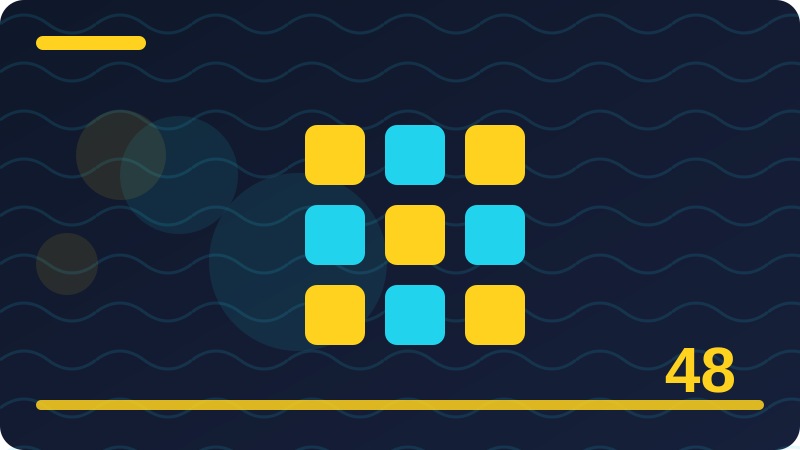

Chapter 48: Building a Real Application: Planning and Structure

Section 1: Meet JsDay: Your Capstone Project
This section is about meet jsday: your capstone project, and it is worth slowing down for, because it touches something you will meet again and again in real JavaScript work. Many beginners rush past ideas like this, hoping they will make sense later, but a little patience now saves a lot of confusion later. Think of meet jsday: your capstone project as one practical tool in a larger toolbox: you do not need to master every detail today, but you do need to know what it is for, when to reach for it, and what a good result looks like. As you read, keep a small example in mind, try the code, and notice what changes when you change one small part of it.
In plain terms, meet jsday: your capstone project works by giving you a clear, repeatable way to handle a common problem instead of improvising a new solution every time. That repeatability matters, because programs grow, teammates join, and code written in a hurry is code someone must later read, test and fix. When you follow a steady pattern, your program becomes easier to reason about: you can predict what should happen, spot what actually happened, and close the gap between the two. The example below shows the pattern in miniature, so you can see the shape of the idea before you apply it to a larger project.
Look closely at the code example for this section and run it in your head, or better, in a real file, before you judge whether you understand it. Change a value, rename a variable, or remove a line and watch what happens, because that kind of small experiment turns a vague feeling into real knowledge. If the result surprises you, that surprise is valuable: it shows you an assumption you were making without noticing it. Write that assumption down, test it again, and you will remember the lesson far longer than if you had simply memorised a definition.
Beginners often stumble on meet jsday: your capstone project not because the idea is difficult, but because they try to do too much at once or copy a large block without understanding its parts. A safer approach is to start with the smallest version that works, confirm it, and then add one improvement at a time, testing after each change. Watch out for silent mistakes too: code that runs without an error can still be wrong if it saves the wrong value, shows the wrong list, or ignores what the user just typed.
To make meet jsday: your capstone project stick, connect it to something you have already built, especially if you are working through the later chapters of this book. Ask yourself where this idea would help, where it would be overkill, and what would break if you left it out entirely. Those three questions force you to think like a builder, not just a reader, and they help you choose wisely when a real project offers many possible tools.
const task = { id: 't1', title: 'Buy milk', done: false };
console.log(task);Check: In your own words, what is the main idea of Meet JsDay: Your Capstone Project, and where would you use it in a small JavaScript project?
Section 2: What JsDay Should Do in One Sentence
This section is about what jsday should do in one sentence, and it is worth slowing down for, because it touches something you will meet again and again in real JavaScript work. Many beginners rush past ideas like this, hoping they will make sense later, but a little patience now saves a lot of confusion later. Think of what jsday should do in one sentence as one practical tool in a larger toolbox: you do not need to master every detail today, but you do need to know what it is for, when to reach for it, and what a good result looks like. As you read, keep a small example in mind, try the code, and notice what changes when you change one small part of it.
In plain terms, what jsday should do in one sentence works by giving you a clear, repeatable way to handle a common problem instead of improvising a new solution every time. That repeatability matters, because programs grow, teammates join, and code written in a hurry is code someone must later read, test and fix. When you follow a steady pattern, your program becomes easier to reason about: you can predict what should happen, spot what actually happened, and close the gap between the two. The example below shows the pattern in miniature, so you can see the shape of the idea before you apply it to a larger project.
Look closely at the code example for this section and run it in your head, or better, in a real file, before you judge whether you understand it. Change a value, rename a variable, or remove a line and watch what happens, because that kind of small experiment turns a vague feeling into real knowledge. If the result surprises you, that surprise is valuable: it shows you an assumption you were making without noticing it. Write that assumption down, test it again, and you will remember the lesson far longer than if you had simply memorised a definition.
Beginners often stumble on what jsday should do in one sentence not because the idea is difficult, but because they try to do too much at once or copy a large block without understanding its parts. A safer approach is to start with the smallest version that works, confirm it, and then add one improvement at a time, testing after each change. Watch out for silent mistakes too: code that runs without an error can still be wrong if it saves the wrong value, shows the wrong list, or ignores what the user just typed.
To make what jsday should do in one sentence stick, connect it to something you have already built, especially if you are working through the later chapters of this book. Ask yourself where this idea would help, where it would be overkill, and what would break if you left it out entirely. Those three questions force you to think like a builder, not just a reader, and they help you choose wisely when a real project offers many possible tools.
const note = { id: 'n1', text: 'Call Mary on Monday' };
console.log(note);Check: In your own words, what is the main idea of What JsDay Should Do in One Sentence, and where would you use it in a small JavaScript project?
Section 3: Who JsDay Is For
This section is about who jsday is for, and it is worth slowing down for, because it touches something you will meet again and again in real JavaScript work. Many beginners rush past ideas like this, hoping they will make sense later, but a little patience now saves a lot of confusion later. Think of who jsday is for as one practical tool in a larger toolbox: you do not need to master every detail today, but you do need to know what it is for, when to reach for it, and what a good result looks like. As you read, keep a small example in mind, try the code, and notice what changes when you change one small part of it.
In plain terms, who jsday is for works by giving you a clear, repeatable way to handle a common problem instead of improvising a new solution every time. That repeatability matters, because programs grow, teammates join, and code written in a hurry is code someone must later read, test and fix. When you follow a steady pattern, your program becomes easier to reason about: you can predict what should happen, spot what actually happened, and close the gap between the two. The example below shows the pattern in miniature, so you can see the shape of the idea before you apply it to a larger project.
Look closely at the code example for this section and run it in your head, or better, in a real file, before you judge whether you understand it. Change a value, rename a variable, or remove a line and watch what happens, because that kind of small experiment turns a vague feeling into real knowledge. If the result surprises you, that surprise is valuable: it shows you an assumption you were making without noticing it. Write that assumption down, test it again, and you will remember the lesson far longer than if you had simply memorised a definition.
Beginners often stumble on who jsday is for not because the idea is difficult, but because they try to do too much at once or copy a large block without understanding its parts. A safer approach is to start with the smallest version that works, confirm it, and then add one improvement at a time, testing after each change. Watch out for silent mistakes too: code that runs without an error can still be wrong if it saves the wrong value, shows the wrong list, or ignores what the user just typed.
To make who jsday is for stick, connect it to something you have already built, especially if you are working through the later chapters of this book. Ask yourself where this idea would help, where it would be overkill, and what would break if you left it out entirely. Those three questions force you to think like a builder, not just a reader, and they help you choose wisely when a real project offers many possible tools.
const KEY = 'jsday-data-v1';
console.log(KEY);Check: In your own words, what is the main idea of Who JsDay Is For, and where would you use it in a small JavaScript project?
Section 4: Listing Every Feature Before Coding
This section is about listing every feature before coding, and it is worth slowing down for, because it touches something you will meet again and again in real JavaScript work. Many beginners rush past ideas like this, hoping they will make sense later, but a little patience now saves a lot of confusion later. Think of listing every feature before coding as one practical tool in a larger toolbox: you do not need to master every detail today, but you do need to know what it is for, when to reach for it, and what a good result looks like. As you read, keep a small example in mind, try the code, and notice what changes when you change one small part of it.
In plain terms, listing every feature before coding works by giving you a clear, repeatable way to handle a common problem instead of improvising a new solution every time. That repeatability matters, because programs grow, teammates join, and code written in a hurry is code someone must later read, test and fix. When you follow a steady pattern, your program becomes easier to reason about: you can predict what should happen, spot what actually happened, and close the gap between the two. The example below shows the pattern in miniature, so you can see the shape of the idea before you apply it to a larger project.
Look closely at the code example for this section and run it in your head, or better, in a real file, before you judge whether you understand it. Change a value, rename a variable, or remove a line and watch what happens, because that kind of small experiment turns a vague feeling into real knowledge. If the result surprises you, that surprise is valuable: it shows you an assumption you were making without noticing it. Write that assumption down, test it again, and you will remember the lesson far longer than if you had simply memorised a definition.
Beginners often stumble on listing every feature before coding not because the idea is difficult, but because they try to do too much at once or copy a large block without understanding its parts. A safer approach is to start with the smallest version that works, confirm it, and then add one improvement at a time, testing after each change. Watch out for silent mistakes too: code that runs without an error can still be wrong if it saves the wrong value, shows the wrong list, or ignores what the user just typed.
To make listing every feature before coding stick, connect it to something you have already built, especially if you are working through the later chapters of this book. Ask yourself where this idea would help, where it would be overkill, and what would break if you left it out entirely. Those three questions force you to think like a builder, not just a reader, and they help you choose wisely when a real project offers many possible tools.
function loadData() { return { tasks: [], notes: [] }; }
console.log(loadData());Check: In your own words, what is the main idea of Listing Every Feature Before Coding, and where would you use it in a small JavaScript project?
Section 5: Tasks Versus Notes: Two Panels, One App
This section is about tasks versus notes: two panels, one app, and it is worth slowing down for, because it touches something you will meet again and again in real JavaScript work. Many beginners rush past ideas like this, hoping they will make sense later, but a little patience now saves a lot of confusion later. Think of tasks versus notes: two panels, one app as one practical tool in a larger toolbox: you do not need to master every detail today, but you do need to know what it is for, when to reach for it, and what a good result looks like. As you read, keep a small example in mind, try the code, and notice what changes when you change one small part of it.
In plain terms, tasks versus notes: two panels, one app works by giving you a clear, repeatable way to handle a common problem instead of improvising a new solution every time. That repeatability matters, because programs grow, teammates join, and code written in a hurry is code someone must later read, test and fix. When you follow a steady pattern, your program becomes easier to reason about: you can predict what should happen, spot what actually happened, and close the gap between the two. The example below shows the pattern in miniature, so you can see the shape of the idea before you apply it to a larger project.
Look closely at the code example for this section and run it in your head, or better, in a real file, before you judge whether you understand it. Change a value, rename a variable, or remove a line and watch what happens, because that kind of small experiment turns a vague feeling into real knowledge. If the result surprises you, that surprise is valuable: it shows you an assumption you were making without noticing it. Write that assumption down, test it again, and you will remember the lesson far longer than if you had simply memorised a definition.
Beginners often stumble on tasks versus notes: two panels, one app not because the idea is difficult, but because they try to do too much at once or copy a large block without understanding its parts. A safer approach is to start with the smallest version that works, confirm it, and then add one improvement at a time, testing after each change. Watch out for silent mistakes too: code that runs without an error can still be wrong if it saves the wrong value, shows the wrong list, or ignores what the user just typed.
To make tasks versus notes: two panels, one app stick, connect it to something you have already built, especially if you are working through the later chapters of this book. Ask yourself where this idea would help, where it would be overkill, and what would break if you left it out entirely. Those three questions force you to think like a builder, not just a reader, and they help you choose wisely when a real project offers many possible tools.
function addTask(state, title) { state.tasks.push({ id: Date.now(), title: title, done: false }); }
const s = { tasks: [] }; addTask(s, 'Read'); console.log(s.tasks);Check: In your own words, what is the main idea of Tasks Versus Notes: Two Panels, One App, and where would you use it in a small JavaScript project?
Section 6: The Add, List, Done and Search Flow
This section is about the add, list, done and search flow, and it is worth slowing down for, because it touches something you will meet again and again in real JavaScript work. Many beginners rush past ideas like this, hoping they will make sense later, but a little patience now saves a lot of confusion later. Think of the add, list, done and search flow as one practical tool in a larger toolbox: you do not need to master every detail today, but you do need to know what it is for, when to reach for it, and what a good result looks like. As you read, keep a small example in mind, try the code, and notice what changes when you change one small part of it.
In plain terms, the add, list, done and search flow works by giving you a clear, repeatable way to handle a common problem instead of improvising a new solution every time. That repeatability matters, because programs grow, teammates join, and code written in a hurry is code someone must later read, test and fix. When you follow a steady pattern, your program becomes easier to reason about: you can predict what should happen, spot what actually happened, and close the gap between the two. The example below shows the pattern in miniature, so you can see the shape of the idea before you apply it to a larger project.
Look closely at the code example for this section and run it in your head, or better, in a real file, before you judge whether you understand it. Change a value, rename a variable, or remove a line and watch what happens, because that kind of small experiment turns a vague feeling into real knowledge. If the result surprises you, that surprise is valuable: it shows you an assumption you were making without noticing it. Write that assumption down, test it again, and you will remember the lesson far longer than if you had simply memorised a definition.
Beginners often stumble on the add, list, done and search flow not because the idea is difficult, but because they try to do too much at once or copy a large block without understanding its parts. A safer approach is to start with the smallest version that works, confirm it, and then add one improvement at a time, testing after each change. Watch out for silent mistakes too: code that runs without an error can still be wrong if it saves the wrong value, shows the wrong list, or ignores what the user just typed.
To make the add, list, done and search flow stick, connect it to something you have already built, especially if you are working through the later chapters of this book. Ask yourself where this idea would help, where it would be overkill, and what would break if you left it out entirely. Those three questions force you to think like a builder, not just a reader, and they help you choose wisely when a real project offers many possible tools.
const jsdayState = { tasks: [], notes: [] };
console.log(jsdayState);Check: In your own words, what is the main idea of The Add, List, Done and Search Flow, and where would you use it in a small JavaScript project?
Section 7: Sketching JsDay on Paper First
This section is about sketching jsday on paper first, and it is worth slowing down for, because it touches something you will meet again and again in real JavaScript work. Many beginners rush past ideas like this, hoping they will make sense later, but a little patience now saves a lot of confusion later. Think of sketching jsday on paper first as one practical tool in a larger toolbox: you do not need to master every detail today, but you do need to know what it is for, when to reach for it, and what a good result looks like. As you read, keep a small example in mind, try the code, and notice what changes when you change one small part of it.
In plain terms, sketching jsday on paper first works by giving you a clear, repeatable way to handle a common problem instead of improvising a new solution every time. That repeatability matters, because programs grow, teammates join, and code written in a hurry is code someone must later read, test and fix. When you follow a steady pattern, your program becomes easier to reason about: you can predict what should happen, spot what actually happened, and close the gap between the two. The example below shows the pattern in miniature, so you can see the shape of the idea before you apply it to a larger project.
Look closely at the code example for this section and run it in your head, or better, in a real file, before you judge whether you understand it. Change a value, rename a variable, or remove a line and watch what happens, because that kind of small experiment turns a vague feeling into real knowledge. If the result surprises you, that surprise is valuable: it shows you an assumption you were making without noticing it. Write that assumption down, test it again, and you will remember the lesson far longer than if you had simply memorised a definition.
Beginners often stumble on sketching jsday on paper first not because the idea is difficult, but because they try to do too much at once or copy a large block without understanding its parts. A safer approach is to start with the smallest version that works, confirm it, and then add one improvement at a time, testing after each change. Watch out for silent mistakes too: code that runs without an error can still be wrong if it saves the wrong value, shows the wrong list, or ignores what the user just typed.
To make sketching jsday on paper first stick, connect it to something you have already built, especially if you are working through the later chapters of this book. Ask yourself where this idea would help, where it would be overkill, and what would break if you left it out entirely. Those three questions force you to think like a builder, not just a reader, and they help you choose wisely when a real project offers many possible tools.
const task = { id: 't1', title: 'Buy milk', done: false };
console.log(task);Check: In your own words, what is the main idea of Sketching JsDay on Paper First, and where would you use it in a small JavaScript project?
Section 8: Planning the Data Model
This section is about planning the data model, and it is worth slowing down for, because it touches something you will meet again and again in real JavaScript work. Many beginners rush past ideas like this, hoping they will make sense later, but a little patience now saves a lot of confusion later. Think of planning the data model as one practical tool in a larger toolbox: you do not need to master every detail today, but you do need to know what it is for, when to reach for it, and what a good result looks like. As you read, keep a small example in mind, try the code, and notice what changes when you change one small part of it.
In plain terms, planning the data model works by giving you a clear, repeatable way to handle a common problem instead of improvising a new solution every time. That repeatability matters, because programs grow, teammates join, and code written in a hurry is code someone must later read, test and fix. When you follow a steady pattern, your program becomes easier to reason about: you can predict what should happen, spot what actually happened, and close the gap between the two. The example below shows the pattern in miniature, so you can see the shape of the idea before you apply it to a larger project.
Look closely at the code example for this section and run it in your head, or better, in a real file, before you judge whether you understand it. Change a value, rename a variable, or remove a line and watch what happens, because that kind of small experiment turns a vague feeling into real knowledge. If the result surprises you, that surprise is valuable: it shows you an assumption you were making without noticing it. Write that assumption down, test it again, and you will remember the lesson far longer than if you had simply memorised a definition.
Beginners often stumble on planning the data model not because the idea is difficult, but because they try to do too much at once or copy a large block without understanding its parts. A safer approach is to start with the smallest version that works, confirm it, and then add one improvement at a time, testing after each change. Watch out for silent mistakes too: code that runs without an error can still be wrong if it saves the wrong value, shows the wrong list, or ignores what the user just typed.
To make planning the data model stick, connect it to something you have already built, especially if you are working through the later chapters of this book. Ask yourself where this idea would help, where it would be overkill, and what would break if you left it out entirely. Those three questions force you to think like a builder, not just a reader, and they help you choose wisely when a real project offers many possible tools.
const note = { id: 'n1', text: 'Call Mary on Monday' };
console.log(note);Check: In your own words, what is the main idea of Planning the Data Model, and where would you use it in a small JavaScript project?
Section 9: Designing a Task Object
This section is about designing a task object, and it is worth slowing down for, because it touches something you will meet again and again in real JavaScript work. Many beginners rush past ideas like this, hoping they will make sense later, but a little patience now saves a lot of confusion later. Think of designing a task object as one practical tool in a larger toolbox: you do not need to master every detail today, but you do need to know what it is for, when to reach for it, and what a good result looks like. As you read, keep a small example in mind, try the code, and notice what changes when you change one small part of it.
In plain terms, designing a task object works by giving you a clear, repeatable way to handle a common problem instead of improvising a new solution every time. That repeatability matters, because programs grow, teammates join, and code written in a hurry is code someone must later read, test and fix. When you follow a steady pattern, your program becomes easier to reason about: you can predict what should happen, spot what actually happened, and close the gap between the two. The example below shows the pattern in miniature, so you can see the shape of the idea before you apply it to a larger project.
Look closely at the code example for this section and run it in your head, or better, in a real file, before you judge whether you understand it. Change a value, rename a variable, or remove a line and watch what happens, because that kind of small experiment turns a vague feeling into real knowledge. If the result surprises you, that surprise is valuable: it shows you an assumption you were making without noticing it. Write that assumption down, test it again, and you will remember the lesson far longer than if you had simply memorised a definition.
Beginners often stumble on designing a task object not because the idea is difficult, but because they try to do too much at once or copy a large block without understanding its parts. A safer approach is to start with the smallest version that works, confirm it, and then add one improvement at a time, testing after each change. Watch out for silent mistakes too: code that runs without an error can still be wrong if it saves the wrong value, shows the wrong list, or ignores what the user just typed.
To make designing a task object stick, connect it to something you have already built, especially if you are working through the later chapters of this book. Ask yourself where this idea would help, where it would be overkill, and what would break if you left it out entirely. Those three questions force you to think like a builder, not just a reader, and they help you choose wisely when a real project offers many possible tools.
const KEY = 'jsday-data-v1';
console.log(KEY);Check: In your own words, what is the main idea of Designing a Task Object, and where would you use it in a small JavaScript project?
Section 10: Designing a Note Object
This section is about designing a note object, and it is worth slowing down for, because it touches something you will meet again and again in real JavaScript work. Many beginners rush past ideas like this, hoping they will make sense later, but a little patience now saves a lot of confusion later. Think of designing a note object as one practical tool in a larger toolbox: you do not need to master every detail today, but you do need to know what it is for, when to reach for it, and what a good result looks like. As you read, keep a small example in mind, try the code, and notice what changes when you change one small part of it.
In plain terms, designing a note object works by giving you a clear, repeatable way to handle a common problem instead of improvising a new solution every time. That repeatability matters, because programs grow, teammates join, and code written in a hurry is code someone must later read, test and fix. When you follow a steady pattern, your program becomes easier to reason about: you can predict what should happen, spot what actually happened, and close the gap between the two. The example below shows the pattern in miniature, so you can see the shape of the idea before you apply it to a larger project.
Look closely at the code example for this section and run it in your head, or better, in a real file, before you judge whether you understand it. Change a value, rename a variable, or remove a line and watch what happens, because that kind of small experiment turns a vague feeling into real knowledge. If the result surprises you, that surprise is valuable: it shows you an assumption you were making without noticing it. Write that assumption down, test it again, and you will remember the lesson far longer than if you had simply memorised a definition.
Beginners often stumble on designing a note object not because the idea is difficult, but because they try to do too much at once or copy a large block without understanding its parts. A safer approach is to start with the smallest version that works, confirm it, and then add one improvement at a time, testing after each change. Watch out for silent mistakes too: code that runs without an error can still be wrong if it saves the wrong value, shows the wrong list, or ignores what the user just typed.
To make designing a note object stick, connect it to something you have already built, especially if you are working through the later chapters of this book. Ask yourself where this idea would help, where it would be overkill, and what would break if you left it out entirely. Those three questions force you to think like a builder, not just a reader, and they help you choose wisely when a real project offers many possible tools.
function loadData() { return { tasks: [], notes: [] }; }
console.log(loadData());Check: In your own words, what is the main idea of Designing a Note Object, and where would you use it in a small JavaScript project?
Section 11: Choosing the localStorage Key jsday-data-v1
This section is about choosing the localstorage key jsday-data-v1, and it is worth slowing down for, because it touches something you will meet again and again in real JavaScript work. Many beginners rush past ideas like this, hoping they will make sense later, but a little patience now saves a lot of confusion later. Think of choosing the localstorage key jsday-data-v1 as one practical tool in a larger toolbox: you do not need to master every detail today, but you do need to know what it is for, when to reach for it, and what a good result looks like. As you read, keep a small example in mind, try the code, and notice what changes when you change one small part of it.
In plain terms, choosing the localstorage key jsday-data-v1 works by giving you a clear, repeatable way to handle a common problem instead of improvising a new solution every time. That repeatability matters, because programs grow, teammates join, and code written in a hurry is code someone must later read, test and fix. When you follow a steady pattern, your program becomes easier to reason about: you can predict what should happen, spot what actually happened, and close the gap between the two. The example below shows the pattern in miniature, so you can see the shape of the idea before you apply it to a larger project.
Look closely at the code example for this section and run it in your head, or better, in a real file, before you judge whether you understand it. Change a value, rename a variable, or remove a line and watch what happens, because that kind of small experiment turns a vague feeling into real knowledge. If the result surprises you, that surprise is valuable: it shows you an assumption you were making without noticing it. Write that assumption down, test it again, and you will remember the lesson far longer than if you had simply memorised a definition.
Beginners often stumble on choosing the localstorage key jsday-data-v1 not because the idea is difficult, but because they try to do too much at once or copy a large block without understanding its parts. A safer approach is to start with the smallest version that works, confirm it, and then add one improvement at a time, testing after each change. Watch out for silent mistakes too: code that runs without an error can still be wrong if it saves the wrong value, shows the wrong list, or ignores what the user just typed.
To make choosing the localstorage key jsday-data-v1 stick, connect it to something you have already built, especially if you are working through the later chapters of this book. Ask yourself where this idea would help, where it would be overkill, and what would break if you left it out entirely. Those three questions force you to think like a builder, not just a reader, and they help you choose wisely when a real project offers many possible tools.
function addTask(state, title) { state.tasks.push({ id: Date.now(), title: title, done: false }); }
const s = { tasks: [] }; addTask(s, 'Read'); console.log(s.tasks);Check: In your own words, what is the main idea of Choosing the localStorage Key jsday-data-v1, and where would you use it in a small JavaScript project?
Section 12: How JsDay Data Is Saved and Loaded
This section is about how jsday data is saved and loaded, and it is worth slowing down for, because it touches something you will meet again and again in real JavaScript work. Many beginners rush past ideas like this, hoping they will make sense later, but a little patience now saves a lot of confusion later. Think of how jsday data is saved and loaded as one practical tool in a larger toolbox: you do not need to master every detail today, but you do need to know what it is for, when to reach for it, and what a good result looks like. As you read, keep a small example in mind, try the code, and notice what changes when you change one small part of it.
In plain terms, how jsday data is saved and loaded works by giving you a clear, repeatable way to handle a common problem instead of improvising a new solution every time. That repeatability matters, because programs grow, teammates join, and code written in a hurry is code someone must later read, test and fix. When you follow a steady pattern, your program becomes easier to reason about: you can predict what should happen, spot what actually happened, and close the gap between the two. The example below shows the pattern in miniature, so you can see the shape of the idea before you apply it to a larger project.
Look closely at the code example for this section and run it in your head, or better, in a real file, before you judge whether you understand it. Change a value, rename a variable, or remove a line and watch what happens, because that kind of small experiment turns a vague feeling into real knowledge. If the result surprises you, that surprise is valuable: it shows you an assumption you were making without noticing it. Write that assumption down, test it again, and you will remember the lesson far longer than if you had simply memorised a definition.
Beginners often stumble on how jsday data is saved and loaded not because the idea is difficult, but because they try to do too much at once or copy a large block without understanding its parts. A safer approach is to start with the smallest version that works, confirm it, and then add one improvement at a time, testing after each change. Watch out for silent mistakes too: code that runs without an error can still be wrong if it saves the wrong value, shows the wrong list, or ignores what the user just typed.
To make how jsday data is saved and loaded stick, connect it to something you have already built, especially if you are working through the later chapters of this book. Ask yourself where this idea would help, where it would be overkill, and what would break if you left it out entirely. Those three questions force you to think like a builder, not just a reader, and they help you choose wisely when a real project offers many possible tools.
const jsdayState = { tasks: [], notes: [] };
console.log(jsdayState);Check: In your own words, what is the main idea of How JsDay Data Is Saved and Loaded, and where would you use it in a small JavaScript project?
Section 13: Planning index.html in Words
This section is about planning index.html in words, and it is worth slowing down for, because it touches something you will meet again and again in real JavaScript work. Many beginners rush past ideas like this, hoping they will make sense later, but a little patience now saves a lot of confusion later. Think of planning index.html in words as one practical tool in a larger toolbox: you do not need to master every detail today, but you do need to know what it is for, when to reach for it, and what a good result looks like. As you read, keep a small example in mind, try the code, and notice what changes when you change one small part of it.
In plain terms, planning index.html in words works by giving you a clear, repeatable way to handle a common problem instead of improvising a new solution every time. That repeatability matters, because programs grow, teammates join, and code written in a hurry is code someone must later read, test and fix. When you follow a steady pattern, your program becomes easier to reason about: you can predict what should happen, spot what actually happened, and close the gap between the two. The example below shows the pattern in miniature, so you can see the shape of the idea before you apply it to a larger project.
Look closely at the code example for this section and run it in your head, or better, in a real file, before you judge whether you understand it. Change a value, rename a variable, or remove a line and watch what happens, because that kind of small experiment turns a vague feeling into real knowledge. If the result surprises you, that surprise is valuable: it shows you an assumption you were making without noticing it. Write that assumption down, test it again, and you will remember the lesson far longer than if you had simply memorised a definition.
Beginners often stumble on planning index.html in words not because the idea is difficult, but because they try to do too much at once or copy a large block without understanding its parts. A safer approach is to start with the smallest version that works, confirm it, and then add one improvement at a time, testing after each change. Watch out for silent mistakes too: code that runs without an error can still be wrong if it saves the wrong value, shows the wrong list, or ignores what the user just typed.
To make planning index.html in words stick, connect it to something you have already built, especially if you are working through the later chapters of this book. Ask yourself where this idea would help, where it would be overkill, and what would break if you left it out entirely. Those three questions force you to think like a builder, not just a reader, and they help you choose wisely when a real project offers many possible tools.
const task = { id: 't1', title: 'Buy milk', done: false };
console.log(task);Check: In your own words, what is the main idea of Planning index.html in Words, and where would you use it in a small JavaScript project?
Section 14: Planning app.js in Words
This section is about planning app.js in words, and it is worth slowing down for, because it touches something you will meet again and again in real JavaScript work. Many beginners rush past ideas like this, hoping they will make sense later, but a little patience now saves a lot of confusion later. Think of planning app.js in words as one practical tool in a larger toolbox: you do not need to master every detail today, but you do need to know what it is for, when to reach for it, and what a good result looks like. As you read, keep a small example in mind, try the code, and notice what changes when you change one small part of it.
In plain terms, planning app.js in words works by giving you a clear, repeatable way to handle a common problem instead of improvising a new solution every time. That repeatability matters, because programs grow, teammates join, and code written in a hurry is code someone must later read, test and fix. When you follow a steady pattern, your program becomes easier to reason about: you can predict what should happen, spot what actually happened, and close the gap between the two. The example below shows the pattern in miniature, so you can see the shape of the idea before you apply it to a larger project.
Look closely at the code example for this section and run it in your head, or better, in a real file, before you judge whether you understand it. Change a value, rename a variable, or remove a line and watch what happens, because that kind of small experiment turns a vague feeling into real knowledge. If the result surprises you, that surprise is valuable: it shows you an assumption you were making without noticing it. Write that assumption down, test it again, and you will remember the lesson far longer than if you had simply memorised a definition.
Beginners often stumble on planning app.js in words not because the idea is difficult, but because they try to do too much at once or copy a large block without understanding its parts. A safer approach is to start with the smallest version that works, confirm it, and then add one improvement at a time, testing after each change. Watch out for silent mistakes too: code that runs without an error can still be wrong if it saves the wrong value, shows the wrong list, or ignores what the user just typed.
To make planning app.js in words stick, connect it to something you have already built, especially if you are working through the later chapters of this book. Ask yourself where this idea would help, where it would be overkill, and what would break if you left it out entirely. Those three questions force you to think like a builder, not just a reader, and they help you choose wisely when a real project offers many possible tools.
const note = { id: 'n1', text: 'Call Mary on Monday' };
console.log(note);Check: In your own words, what is the main idea of Planning app.js in Words, and where would you use it in a small JavaScript project?
Section 15: No Framework, No External Libraries
This section is about no framework, no external libraries, and it is worth slowing down for, because it touches something you will meet again and again in real JavaScript work. Many beginners rush past ideas like this, hoping they will make sense later, but a little patience now saves a lot of confusion later. Think of no framework, no external libraries as one practical tool in a larger toolbox: you do not need to master every detail today, but you do need to know what it is for, when to reach for it, and what a good result looks like. As you read, keep a small example in mind, try the code, and notice what changes when you change one small part of it.
In plain terms, no framework, no external libraries works by giving you a clear, repeatable way to handle a common problem instead of improvising a new solution every time. That repeatability matters, because programs grow, teammates join, and code written in a hurry is code someone must later read, test and fix. When you follow a steady pattern, your program becomes easier to reason about: you can predict what should happen, spot what actually happened, and close the gap between the two. The example below shows the pattern in miniature, so you can see the shape of the idea before you apply it to a larger project.
Look closely at the code example for this section and run it in your head, or better, in a real file, before you judge whether you understand it. Change a value, rename a variable, or remove a line and watch what happens, because that kind of small experiment turns a vague feeling into real knowledge. If the result surprises you, that surprise is valuable: it shows you an assumption you were making without noticing it. Write that assumption down, test it again, and you will remember the lesson far longer than if you had simply memorised a definition.
Beginners often stumble on no framework, no external libraries not because the idea is difficult, but because they try to do too much at once or copy a large block without understanding its parts. A safer approach is to start with the smallest version that works, confirm it, and then add one improvement at a time, testing after each change. Watch out for silent mistakes too: code that runs without an error can still be wrong if it saves the wrong value, shows the wrong list, or ignores what the user just typed.
To make no framework, no external libraries stick, connect it to something you have already built, especially if you are working through the later chapters of this book. Ask yourself where this idea would help, where it would be overkill, and what would break if you left it out entirely. Those three questions force you to think like a builder, not just a reader, and they help you choose wisely when a real project offers many possible tools.
const KEY = 'jsday-data-v1';
console.log(KEY);Check: In your own words, what is the main idea of No Framework, No External Libraries, and where would you use it in a small JavaScript project?
Section 16: Splitting app.js into Clear Parts
This section is about splitting app.js into clear parts, and it is worth slowing down for, because it touches something you will meet again and again in real JavaScript work. Many beginners rush past ideas like this, hoping they will make sense later, but a little patience now saves a lot of confusion later. Think of splitting app.js into clear parts as one practical tool in a larger toolbox: you do not need to master every detail today, but you do need to know what it is for, when to reach for it, and what a good result looks like. As you read, keep a small example in mind, try the code, and notice what changes when you change one small part of it.
In plain terms, splitting app.js into clear parts works by giving you a clear, repeatable way to handle a common problem instead of improvising a new solution every time. That repeatability matters, because programs grow, teammates join, and code written in a hurry is code someone must later read, test and fix. When you follow a steady pattern, your program becomes easier to reason about: you can predict what should happen, spot what actually happened, and close the gap between the two. The example below shows the pattern in miniature, so you can see the shape of the idea before you apply it to a larger project.
Look closely at the code example for this section and run it in your head, or better, in a real file, before you judge whether you understand it. Change a value, rename a variable, or remove a line and watch what happens, because that kind of small experiment turns a vague feeling into real knowledge. If the result surprises you, that surprise is valuable: it shows you an assumption you were making without noticing it. Write that assumption down, test it again, and you will remember the lesson far longer than if you had simply memorised a definition.
Beginners often stumble on splitting app.js into clear parts not because the idea is difficult, but because they try to do too much at once or copy a large block without understanding its parts. A safer approach is to start with the smallest version that works, confirm it, and then add one improvement at a time, testing after each change. Watch out for silent mistakes too: code that runs without an error can still be wrong if it saves the wrong value, shows the wrong list, or ignores what the user just typed.
To make splitting app.js into clear parts stick, connect it to something you have already built, especially if you are working through the later chapters of this book. Ask yourself where this idea would help, where it would be overkill, and what would break if you left it out entirely. Those three questions force you to think like a builder, not just a reader, and they help you choose wisely when a real project offers many possible tools.
function loadData() { return { tasks: [], notes: [] }; }
console.log(loadData());Check: In your own words, what is the main idea of Splitting app.js into Clear Parts, and where would you use it in a small JavaScript project?
Section 17: State: The Single Source of Truth
This section is about state: the single source of truth, and it is worth slowing down for, because it touches something you will meet again and again in real JavaScript work. Many beginners rush past ideas like this, hoping they will make sense later, but a little patience now saves a lot of confusion later. Think of state: the single source of truth as one practical tool in a larger toolbox: you do not need to master every detail today, but you do need to know what it is for, when to reach for it, and what a good result looks like. As you read, keep a small example in mind, try the code, and notice what changes when you change one small part of it.
In plain terms, state: the single source of truth works by giving you a clear, repeatable way to handle a common problem instead of improvising a new solution every time. That repeatability matters, because programs grow, teammates join, and code written in a hurry is code someone must later read, test and fix. When you follow a steady pattern, your program becomes easier to reason about: you can predict what should happen, spot what actually happened, and close the gap between the two. The example below shows the pattern in miniature, so you can see the shape of the idea before you apply it to a larger project.
Look closely at the code example for this section and run it in your head, or better, in a real file, before you judge whether you understand it. Change a value, rename a variable, or remove a line and watch what happens, because that kind of small experiment turns a vague feeling into real knowledge. If the result surprises you, that surprise is valuable: it shows you an assumption you were making without noticing it. Write that assumption down, test it again, and you will remember the lesson far longer than if you had simply memorised a definition.
Beginners often stumble on state: the single source of truth not because the idea is difficult, but because they try to do too much at once or copy a large block without understanding its parts. A safer approach is to start with the smallest version that works, confirm it, and then add one improvement at a time, testing after each change. Watch out for silent mistakes too: code that runs without an error can still be wrong if it saves the wrong value, shows the wrong list, or ignores what the user just typed.
To make state: the single source of truth stick, connect it to something you have already built, especially if you are working through the later chapters of this book. Ask yourself where this idea would help, where it would be overkill, and what would break if you left it out entirely. Those three questions force you to think like a builder, not just a reader, and they help you choose wisely when a real project offers many possible tools.
function addTask(state, title) { state.tasks.push({ id: Date.now(), title: title, done: false }); }
const s = { tasks: [] }; addTask(s, 'Read'); console.log(s.tasks);Check: In your own words, what is the main idea of State: The Single Source of Truth, and where would you use it in a small JavaScript project?
Section 18: Rendering: Turning State into Panels
This section is about rendering: turning state into panels, and it is worth slowing down for, because it touches something you will meet again and again in real JavaScript work. Many beginners rush past ideas like this, hoping they will make sense later, but a little patience now saves a lot of confusion later. Think of rendering: turning state into panels as one practical tool in a larger toolbox: you do not need to master every detail today, but you do need to know what it is for, when to reach for it, and what a good result looks like. As you read, keep a small example in mind, try the code, and notice what changes when you change one small part of it.
In plain terms, rendering: turning state into panels works by giving you a clear, repeatable way to handle a common problem instead of improvising a new solution every time. That repeatability matters, because programs grow, teammates join, and code written in a hurry is code someone must later read, test and fix. When you follow a steady pattern, your program becomes easier to reason about: you can predict what should happen, spot what actually happened, and close the gap between the two. The example below shows the pattern in miniature, so you can see the shape of the idea before you apply it to a larger project.
Look closely at the code example for this section and run it in your head, or better, in a real file, before you judge whether you understand it. Change a value, rename a variable, or remove a line and watch what happens, because that kind of small experiment turns a vague feeling into real knowledge. If the result surprises you, that surprise is valuable: it shows you an assumption you were making without noticing it. Write that assumption down, test it again, and you will remember the lesson far longer than if you had simply memorised a definition.
Beginners often stumble on rendering: turning state into panels not because the idea is difficult, but because they try to do too much at once or copy a large block without understanding its parts. A safer approach is to start with the smallest version that works, confirm it, and then add one improvement at a time, testing after each change. Watch out for silent mistakes too: code that runs without an error can still be wrong if it saves the wrong value, shows the wrong list, or ignores what the user just typed.
To make rendering: turning state into panels stick, connect it to something you have already built, especially if you are working through the later chapters of this book. Ask yourself where this idea would help, where it would be overkill, and what would break if you left it out entirely. Those three questions force you to think like a builder, not just a reader, and they help you choose wisely when a real project offers many possible tools.
const jsdayState = { tasks: [], notes: [] };
console.log(jsdayState);Check: In your own words, what is the main idea of Rendering: Turning State into Panels, and where would you use it in a small JavaScript project?
Section 19: Events: Listening for User Actions
This section is about events: listening for user actions, and it is worth slowing down for, because it touches something you will meet again and again in real JavaScript work. Many beginners rush past ideas like this, hoping they will make sense later, but a little patience now saves a lot of confusion later. Think of events: listening for user actions as one practical tool in a larger toolbox: you do not need to master every detail today, but you do need to know what it is for, when to reach for it, and what a good result looks like. As you read, keep a small example in mind, try the code, and notice what changes when you change one small part of it.
In plain terms, events: listening for user actions works by giving you a clear, repeatable way to handle a common problem instead of improvising a new solution every time. That repeatability matters, because programs grow, teammates join, and code written in a hurry is code someone must later read, test and fix. When you follow a steady pattern, your program becomes easier to reason about: you can predict what should happen, spot what actually happened, and close the gap between the two. The example below shows the pattern in miniature, so you can see the shape of the idea before you apply it to a larger project.
Look closely at the code example for this section and run it in your head, or better, in a real file, before you judge whether you understand it. Change a value, rename a variable, or remove a line and watch what happens, because that kind of small experiment turns a vague feeling into real knowledge. If the result surprises you, that surprise is valuable: it shows you an assumption you were making without noticing it. Write that assumption down, test it again, and you will remember the lesson far longer than if you had simply memorised a definition.
Beginners often stumble on events: listening for user actions not because the idea is difficult, but because they try to do too much at once or copy a large block without understanding its parts. A safer approach is to start with the smallest version that works, confirm it, and then add one improvement at a time, testing after each change. Watch out for silent mistakes too: code that runs without an error can still be wrong if it saves the wrong value, shows the wrong list, or ignores what the user just typed.
To make events: listening for user actions stick, connect it to something you have already built, especially if you are working through the later chapters of this book. Ask yourself where this idea would help, where it would be overkill, and what would break if you left it out entirely. Those three questions force you to think like a builder, not just a reader, and they help you choose wisely when a real project offers many possible tools.
const task = { id: 't1', title: 'Buy milk', done: false };
console.log(task);Check: In your own words, what is the main idea of Events: Listening for User Actions, and where would you use it in a small JavaScript project?
Section 20: Add Task: From Input to Saved Item
This section is about add task: from input to saved item, and it is worth slowing down for, because it touches something you will meet again and again in real JavaScript work. Many beginners rush past ideas like this, hoping they will make sense later, but a little patience now saves a lot of confusion later. Think of add task: from input to saved item as one practical tool in a larger toolbox: you do not need to master every detail today, but you do need to know what it is for, when to reach for it, and what a good result looks like. As you read, keep a small example in mind, try the code, and notice what changes when you change one small part of it.
In plain terms, add task: from input to saved item works by giving you a clear, repeatable way to handle a common problem instead of improvising a new solution every time. That repeatability matters, because programs grow, teammates join, and code written in a hurry is code someone must later read, test and fix. When you follow a steady pattern, your program becomes easier to reason about: you can predict what should happen, spot what actually happened, and close the gap between the two. The example below shows the pattern in miniature, so you can see the shape of the idea before you apply it to a larger project.
Look closely at the code example for this section and run it in your head, or better, in a real file, before you judge whether you understand it. Change a value, rename a variable, or remove a line and watch what happens, because that kind of small experiment turns a vague feeling into real knowledge. If the result surprises you, that surprise is valuable: it shows you an assumption you were making without noticing it. Write that assumption down, test it again, and you will remember the lesson far longer than if you had simply memorised a definition.
Beginners often stumble on add task: from input to saved item not because the idea is difficult, but because they try to do too much at once or copy a large block without understanding its parts. A safer approach is to start with the smallest version that works, confirm it, and then add one improvement at a time, testing after each change. Watch out for silent mistakes too: code that runs without an error can still be wrong if it saves the wrong value, shows the wrong list, or ignores what the user just typed.
To make add task: from input to saved item stick, connect it to something you have already built, especially if you are working through the later chapters of this book. Ask yourself where this idea would help, where it would be overkill, and what would break if you left it out entirely. Those three questions force you to think like a builder, not just a reader, and they help you choose wisely when a real project offers many possible tools.
const note = { id: 'n1', text: 'Call Mary on Monday' };
console.log(note);Check: In your own words, what is the main idea of Add Task: From Input to Saved Item, and where would you use it in a small JavaScript project?
Section 21: Add Note: From Input to Saved Item
This section is about add note: from input to saved item, and it is worth slowing down for, because it touches something you will meet again and again in real JavaScript work. Many beginners rush past ideas like this, hoping they will make sense later, but a little patience now saves a lot of confusion later. Think of add note: from input to saved item as one practical tool in a larger toolbox: you do not need to master every detail today, but you do need to know what it is for, when to reach for it, and what a good result looks like. As you read, keep a small example in mind, try the code, and notice what changes when you change one small part of it.
In plain terms, add note: from input to saved item works by giving you a clear, repeatable way to handle a common problem instead of improvising a new solution every time. That repeatability matters, because programs grow, teammates join, and code written in a hurry is code someone must later read, test and fix. When you follow a steady pattern, your program becomes easier to reason about: you can predict what should happen, spot what actually happened, and close the gap between the two. The example below shows the pattern in miniature, so you can see the shape of the idea before you apply it to a larger project.
Look closely at the code example for this section and run it in your head, or better, in a real file, before you judge whether you understand it. Change a value, rename a variable, or remove a line and watch what happens, because that kind of small experiment turns a vague feeling into real knowledge. If the result surprises you, that surprise is valuable: it shows you an assumption you were making without noticing it. Write that assumption down, test it again, and you will remember the lesson far longer than if you had simply memorised a definition.
Beginners often stumble on add note: from input to saved item not because the idea is difficult, but because they try to do too much at once or copy a large block without understanding its parts. A safer approach is to start with the smallest version that works, confirm it, and then add one improvement at a time, testing after each change. Watch out for silent mistakes too: code that runs without an error can still be wrong if it saves the wrong value, shows the wrong list, or ignores what the user just typed.
To make add note: from input to saved item stick, connect it to something you have already built, especially if you are working through the later chapters of this book. Ask yourself where this idea would help, where it would be overkill, and what would break if you left it out entirely. Those three questions force you to think like a builder, not just a reader, and they help you choose wisely when a real project offers many possible tools.
const KEY = 'jsday-data-v1';
console.log(KEY);Check: In your own words, what is the main idea of Add Note: From Input to Saved Item, and where would you use it in a small JavaScript project?
Section 22: Listing Tasks in Order
This section is about listing tasks in order, and it is worth slowing down for, because it touches something you will meet again and again in real JavaScript work. Many beginners rush past ideas like this, hoping they will make sense later, but a little patience now saves a lot of confusion later. Think of listing tasks in order as one practical tool in a larger toolbox: you do not need to master every detail today, but you do need to know what it is for, when to reach for it, and what a good result looks like. As you read, keep a small example in mind, try the code, and notice what changes when you change one small part of it.
In plain terms, listing tasks in order works by giving you a clear, repeatable way to handle a common problem instead of improvising a new solution every time. That repeatability matters, because programs grow, teammates join, and code written in a hurry is code someone must later read, test and fix. When you follow a steady pattern, your program becomes easier to reason about: you can predict what should happen, spot what actually happened, and close the gap between the two. The example below shows the pattern in miniature, so you can see the shape of the idea before you apply it to a larger project.
Look closely at the code example for this section and run it in your head, or better, in a real file, before you judge whether you understand it. Change a value, rename a variable, or remove a line and watch what happens, because that kind of small experiment turns a vague feeling into real knowledge. If the result surprises you, that surprise is valuable: it shows you an assumption you were making without noticing it. Write that assumption down, test it again, and you will remember the lesson far longer than if you had simply memorised a definition.
Beginners often stumble on listing tasks in order not because the idea is difficult, but because they try to do too much at once or copy a large block without understanding its parts. A safer approach is to start with the smallest version that works, confirm it, and then add one improvement at a time, testing after each change. Watch out for silent mistakes too: code that runs without an error can still be wrong if it saves the wrong value, shows the wrong list, or ignores what the user just typed.
To make listing tasks in order stick, connect it to something you have already built, especially if you are working through the later chapters of this book. Ask yourself where this idea would help, where it would be overkill, and what would break if you left it out entirely. Those three questions force you to think like a builder, not just a reader, and they help you choose wisely when a real project offers many possible tools.
function loadData() { return { tasks: [], notes: [] }; }
console.log(loadData());Check: In your own words, what is the main idea of Listing Tasks in Order, and where would you use it in a small JavaScript project?
Section 23: Listing Notes in Order
This section is about listing notes in order, and it is worth slowing down for, because it touches something you will meet again and again in real JavaScript work. Many beginners rush past ideas like this, hoping they will make sense later, but a little patience now saves a lot of confusion later. Think of listing notes in order as one practical tool in a larger toolbox: you do not need to master every detail today, but you do need to know what it is for, when to reach for it, and what a good result looks like. As you read, keep a small example in mind, try the code, and notice what changes when you change one small part of it.
In plain terms, listing notes in order works by giving you a clear, repeatable way to handle a common problem instead of improvising a new solution every time. That repeatability matters, because programs grow, teammates join, and code written in a hurry is code someone must later read, test and fix. When you follow a steady pattern, your program becomes easier to reason about: you can predict what should happen, spot what actually happened, and close the gap between the two. The example below shows the pattern in miniature, so you can see the shape of the idea before you apply it to a larger project.
Look closely at the code example for this section and run it in your head, or better, in a real file, before you judge whether you understand it. Change a value, rename a variable, or remove a line and watch what happens, because that kind of small experiment turns a vague feeling into real knowledge. If the result surprises you, that surprise is valuable: it shows you an assumption you were making without noticing it. Write that assumption down, test it again, and you will remember the lesson far longer than if you had simply memorised a definition.
Beginners often stumble on listing notes in order not because the idea is difficult, but because they try to do too much at once or copy a large block without understanding its parts. A safer approach is to start with the smallest version that works, confirm it, and then add one improvement at a time, testing after each change. Watch out for silent mistakes too: code that runs without an error can still be wrong if it saves the wrong value, shows the wrong list, or ignores what the user just typed.
To make listing notes in order stick, connect it to something you have already built, especially if you are working through the later chapters of this book. Ask yourself where this idea would help, where it would be overkill, and what would break if you left it out entirely. Those three questions force you to think like a builder, not just a reader, and they help you choose wisely when a real project offers many possible tools.
function addTask(state, title) { state.tasks.push({ id: Date.now(), title: title, done: false }); }
const s = { tasks: [] }; addTask(s, 'Read'); console.log(s.tasks);Check: In your own words, what is the main idea of Listing Notes in Order, and where would you use it in a small JavaScript project?
Section 24: Marking a Task Done
This section is about marking a task done, and it is worth slowing down for, because it touches something you will meet again and again in real JavaScript work. Many beginners rush past ideas like this, hoping they will make sense later, but a little patience now saves a lot of confusion later. Think of marking a task done as one practical tool in a larger toolbox: you do not need to master every detail today, but you do need to know what it is for, when to reach for it, and what a good result looks like. As you read, keep a small example in mind, try the code, and notice what changes when you change one small part of it.
In plain terms, marking a task done works by giving you a clear, repeatable way to handle a common problem instead of improvising a new solution every time. That repeatability matters, because programs grow, teammates join, and code written in a hurry is code someone must later read, test and fix. When you follow a steady pattern, your program becomes easier to reason about: you can predict what should happen, spot what actually happened, and close the gap between the two. The example below shows the pattern in miniature, so you can see the shape of the idea before you apply it to a larger project.
Look closely at the code example for this section and run it in your head, or better, in a real file, before you judge whether you understand it. Change a value, rename a variable, or remove a line and watch what happens, because that kind of small experiment turns a vague feeling into real knowledge. If the result surprises you, that surprise is valuable: it shows you an assumption you were making without noticing it. Write that assumption down, test it again, and you will remember the lesson far longer than if you had simply memorised a definition.
Beginners often stumble on marking a task done not because the idea is difficult, but because they try to do too much at once or copy a large block without understanding its parts. A safer approach is to start with the smallest version that works, confirm it, and then add one improvement at a time, testing after each change. Watch out for silent mistakes too: code that runs without an error can still be wrong if it saves the wrong value, shows the wrong list, or ignores what the user just typed.
To make marking a task done stick, connect it to something you have already built, especially if you are working through the later chapters of this book. Ask yourself where this idea would help, where it would be overkill, and what would break if you left it out entirely. Those three questions force you to think like a builder, not just a reader, and they help you choose wisely when a real project offers many possible tools.
const jsdayState = { tasks: [], notes: [] };
console.log(jsdayState);Check: In your own words, what is the main idea of Marking a Task Done, and where would you use it in a small JavaScript project?
Section 25: Unmarking a Task You Reopened
This section is about unmarking a task you reopened, and it is worth slowing down for, because it touches something you will meet again and again in real JavaScript work. Many beginners rush past ideas like this, hoping they will make sense later, but a little patience now saves a lot of confusion later. Think of unmarking a task you reopened as one practical tool in a larger toolbox: you do not need to master every detail today, but you do need to know what it is for, when to reach for it, and what a good result looks like. As you read, keep a small example in mind, try the code, and notice what changes when you change one small part of it.
In plain terms, unmarking a task you reopened works by giving you a clear, repeatable way to handle a common problem instead of improvising a new solution every time. That repeatability matters, because programs grow, teammates join, and code written in a hurry is code someone must later read, test and fix. When you follow a steady pattern, your program becomes easier to reason about: you can predict what should happen, spot what actually happened, and close the gap between the two. The example below shows the pattern in miniature, so you can see the shape of the idea before you apply it to a larger project.
Look closely at the code example for this section and run it in your head, or better, in a real file, before you judge whether you understand it. Change a value, rename a variable, or remove a line and watch what happens, because that kind of small experiment turns a vague feeling into real knowledge. If the result surprises you, that surprise is valuable: it shows you an assumption you were making without noticing it. Write that assumption down, test it again, and you will remember the lesson far longer than if you had simply memorised a definition.
Beginners often stumble on unmarking a task you reopened not because the idea is difficult, but because they try to do too much at once or copy a large block without understanding its parts. A safer approach is to start with the smallest version that works, confirm it, and then add one improvement at a time, testing after each change. Watch out for silent mistakes too: code that runs without an error can still be wrong if it saves the wrong value, shows the wrong list, or ignores what the user just typed.
To make unmarking a task you reopened stick, connect it to something you have already built, especially if you are working through the later chapters of this book. Ask yourself where this idea would help, where it would be overkill, and what would break if you left it out entirely. Those three questions force you to think like a builder, not just a reader, and they help you choose wisely when a real project offers many possible tools.
const task = { id: 't1', title: 'Buy milk', done: false };
console.log(task);Check: In your own words, what is the main idea of Unmarking a Task You Reopened, and where would you use it in a small JavaScript project?
Section 26: Deleting Without Losing Trust
This section is about deleting without losing trust, and it is worth slowing down for, because it touches something you will meet again and again in real JavaScript work. Many beginners rush past ideas like this, hoping they will make sense later, but a little patience now saves a lot of confusion later. Think of deleting without losing trust as one practical tool in a larger toolbox: you do not need to master every detail today, but you do need to know what it is for, when to reach for it, and what a good result looks like. As you read, keep a small example in mind, try the code, and notice what changes when you change one small part of it.
In plain terms, deleting without losing trust works by giving you a clear, repeatable way to handle a common problem instead of improvising a new solution every time. That repeatability matters, because programs grow, teammates join, and code written in a hurry is code someone must later read, test and fix. When you follow a steady pattern, your program becomes easier to reason about: you can predict what should happen, spot what actually happened, and close the gap between the two. The example below shows the pattern in miniature, so you can see the shape of the idea before you apply it to a larger project.
Look closely at the code example for this section and run it in your head, or better, in a real file, before you judge whether you understand it. Change a value, rename a variable, or remove a line and watch what happens, because that kind of small experiment turns a vague feeling into real knowledge. If the result surprises you, that surprise is valuable: it shows you an assumption you were making without noticing it. Write that assumption down, test it again, and you will remember the lesson far longer than if you had simply memorised a definition.
Beginners often stumble on deleting without losing trust not because the idea is difficult, but because they try to do too much at once or copy a large block without understanding its parts. A safer approach is to start with the smallest version that works, confirm it, and then add one improvement at a time, testing after each change. Watch out for silent mistakes too: code that runs without an error can still be wrong if it saves the wrong value, shows the wrong list, or ignores what the user just typed.
To make deleting without losing trust stick, connect it to something you have already built, especially if you are working through the later chapters of this book. Ask yourself where this idea would help, where it would be overkill, and what would break if you left it out entirely. Those three questions force you to think like a builder, not just a reader, and they help you choose wisely when a real project offers many possible tools.
const note = { id: 'n1', text: 'Call Mary on Monday' };
console.log(note);Check: In your own words, what is the main idea of Deleting Without Losing Trust, and where would you use it in a small JavaScript project?
Section 27: Searching Tasks and Notes
This section is about searching tasks and notes, and it is worth slowing down for, because it touches something you will meet again and again in real JavaScript work. Many beginners rush past ideas like this, hoping they will make sense later, but a little patience now saves a lot of confusion later. Think of searching tasks and notes as one practical tool in a larger toolbox: you do not need to master every detail today, but you do need to know what it is for, when to reach for it, and what a good result looks like. As you read, keep a small example in mind, try the code, and notice what changes when you change one small part of it.
In plain terms, searching tasks and notes works by giving you a clear, repeatable way to handle a common problem instead of improvising a new solution every time. That repeatability matters, because programs grow, teammates join, and code written in a hurry is code someone must later read, test and fix. When you follow a steady pattern, your program becomes easier to reason about: you can predict what should happen, spot what actually happened, and close the gap between the two. The example below shows the pattern in miniature, so you can see the shape of the idea before you apply it to a larger project.
Look closely at the code example for this section and run it in your head, or better, in a real file, before you judge whether you understand it. Change a value, rename a variable, or remove a line and watch what happens, because that kind of small experiment turns a vague feeling into real knowledge. If the result surprises you, that surprise is valuable: it shows you an assumption you were making without noticing it. Write that assumption down, test it again, and you will remember the lesson far longer than if you had simply memorised a definition.
Beginners often stumble on searching tasks and notes not because the idea is difficult, but because they try to do too much at once or copy a large block without understanding its parts. A safer approach is to start with the smallest version that works, confirm it, and then add one improvement at a time, testing after each change. Watch out for silent mistakes too: code that runs without an error can still be wrong if it saves the wrong value, shows the wrong list, or ignores what the user just typed.
To make searching tasks and notes stick, connect it to something you have already built, especially if you are working through the later chapters of this book. Ask yourself where this idea would help, where it would be overkill, and what would break if you left it out entirely. Those three questions force you to think like a builder, not just a reader, and they help you choose wisely when a real project offers many possible tools.
const KEY = 'jsday-data-v1';
console.log(KEY);Check: In your own words, what is the main idea of Searching Tasks and Notes, and where would you use it in a small JavaScript project?
Section 28: Filtering Done and Open Tasks
This section is about filtering done and open tasks, and it is worth slowing down for, because it touches something you will meet again and again in real JavaScript work. Many beginners rush past ideas like this, hoping they will make sense later, but a little patience now saves a lot of confusion later. Think of filtering done and open tasks as one practical tool in a larger toolbox: you do not need to master every detail today, but you do need to know what it is for, when to reach for it, and what a good result looks like. As you read, keep a small example in mind, try the code, and notice what changes when you change one small part of it.
In plain terms, filtering done and open tasks works by giving you a clear, repeatable way to handle a common problem instead of improvising a new solution every time. That repeatability matters, because programs grow, teammates join, and code written in a hurry is code someone must later read, test and fix. When you follow a steady pattern, your program becomes easier to reason about: you can predict what should happen, spot what actually happened, and close the gap between the two. The example below shows the pattern in miniature, so you can see the shape of the idea before you apply it to a larger project.
Look closely at the code example for this section and run it in your head, or better, in a real file, before you judge whether you understand it. Change a value, rename a variable, or remove a line and watch what happens, because that kind of small experiment turns a vague feeling into real knowledge. If the result surprises you, that surprise is valuable: it shows you an assumption you were making without noticing it. Write that assumption down, test it again, and you will remember the lesson far longer than if you had simply memorised a definition.
Beginners often stumble on filtering done and open tasks not because the idea is difficult, but because they try to do too much at once or copy a large block without understanding its parts. A safer approach is to start with the smallest version that works, confirm it, and then add one improvement at a time, testing after each change. Watch out for silent mistakes too: code that runs without an error can still be wrong if it saves the wrong value, shows the wrong list, or ignores what the user just typed.
To make filtering done and open tasks stick, connect it to something you have already built, especially if you are working through the later chapters of this book. Ask yourself where this idea would help, where it would be overkill, and what would break if you left it out entirely. Those three questions force you to think like a builder, not just a reader, and they help you choose wisely when a real project offers many possible tools.
function loadData() { return { tasks: [], notes: [] }; }
console.log(loadData());Check: In your own words, what is the main idea of Filtering Done and Open Tasks, and where would you use it in a small JavaScript project?
Section 29: Empty States That Guide the User
This section is about empty states that guide the user, and it is worth slowing down for, because it touches something you will meet again and again in real JavaScript work. Many beginners rush past ideas like this, hoping they will make sense later, but a little patience now saves a lot of confusion later. Think of empty states that guide the user as one practical tool in a larger toolbox: you do not need to master every detail today, but you do need to know what it is for, when to reach for it, and what a good result looks like. As you read, keep a small example in mind, try the code, and notice what changes when you change one small part of it.
In plain terms, empty states that guide the user works by giving you a clear, repeatable way to handle a common problem instead of improvising a new solution every time. That repeatability matters, because programs grow, teammates join, and code written in a hurry is code someone must later read, test and fix. When you follow a steady pattern, your program becomes easier to reason about: you can predict what should happen, spot what actually happened, and close the gap between the two. The example below shows the pattern in miniature, so you can see the shape of the idea before you apply it to a larger project.
Look closely at the code example for this section and run it in your head, or better, in a real file, before you judge whether you understand it. Change a value, rename a variable, or remove a line and watch what happens, because that kind of small experiment turns a vague feeling into real knowledge. If the result surprises you, that surprise is valuable: it shows you an assumption you were making without noticing it. Write that assumption down, test it again, and you will remember the lesson far longer than if you had simply memorised a definition.
Beginners often stumble on empty states that guide the user not because the idea is difficult, but because they try to do too much at once or copy a large block without understanding its parts. A safer approach is to start with the smallest version that works, confirm it, and then add one improvement at a time, testing after each change. Watch out for silent mistakes too: code that runs without an error can still be wrong if it saves the wrong value, shows the wrong list, or ignores what the user just typed.
To make empty states that guide the user stick, connect it to something you have already built, especially if you are working through the later chapters of this book. Ask yourself where this idea would help, where it would be overkill, and what would break if you left it out entirely. Those three questions force you to think like a builder, not just a reader, and they help you choose wisely when a real project offers many possible tools.
function addTask(state, title) { state.tasks.push({ id: Date.now(), title: title, done: false }); }
const s = { tasks: [] }; addTask(s, 'Read'); console.log(s.tasks);Check: In your own words, what is the main idea of Empty States That Guide the User, and where would you use it in a small JavaScript project?
Section 30: Handling Blank Inputs Kindly
This section is about handling blank inputs kindly, and it is worth slowing down for, because it touches something you will meet again and again in real JavaScript work. Many beginners rush past ideas like this, hoping they will make sense later, but a little patience now saves a lot of confusion later. Think of handling blank inputs kindly as one practical tool in a larger toolbox: you do not need to master every detail today, but you do need to know what it is for, when to reach for it, and what a good result looks like. As you read, keep a small example in mind, try the code, and notice what changes when you change one small part of it.
In plain terms, handling blank inputs kindly works by giving you a clear, repeatable way to handle a common problem instead of improvising a new solution every time. That repeatability matters, because programs grow, teammates join, and code written in a hurry is code someone must later read, test and fix. When you follow a steady pattern, your program becomes easier to reason about: you can predict what should happen, spot what actually happened, and close the gap between the two. The example below shows the pattern in miniature, so you can see the shape of the idea before you apply it to a larger project.
Look closely at the code example for this section and run it in your head, or better, in a real file, before you judge whether you understand it. Change a value, rename a variable, or remove a line and watch what happens, because that kind of small experiment turns a vague feeling into real knowledge. If the result surprises you, that surprise is valuable: it shows you an assumption you were making without noticing it. Write that assumption down, test it again, and you will remember the lesson far longer than if you had simply memorised a definition.
Beginners often stumble on handling blank inputs kindly not because the idea is difficult, but because they try to do too much at once or copy a large block without understanding its parts. A safer approach is to start with the smallest version that works, confirm it, and then add one improvement at a time, testing after each change. Watch out for silent mistakes too: code that runs without an error can still be wrong if it saves the wrong value, shows the wrong list, or ignores what the user just typed.
To make handling blank inputs kindly stick, connect it to something you have already built, especially if you are working through the later chapters of this book. Ask yourself where this idea would help, where it would be overkill, and what would break if you left it out entirely. Those three questions force you to think like a builder, not just a reader, and they help you choose wisely when a real project offers many possible tools.
const jsdayState = { tasks: [], notes: [] };
console.log(jsdayState);Check: In your own words, what is the main idea of Handling Blank Inputs Kindly, and where would you use it in a small JavaScript project?
Section 31: Handling Very Long Notes
This section is about handling very long notes, and it is worth slowing down for, because it touches something you will meet again and again in real JavaScript work. Many beginners rush past ideas like this, hoping they will make sense later, but a little patience now saves a lot of confusion later. Think of handling very long notes as one practical tool in a larger toolbox: you do not need to master every detail today, but you do need to know what it is for, when to reach for it, and what a good result looks like. As you read, keep a small example in mind, try the code, and notice what changes when you change one small part of it.
In plain terms, handling very long notes works by giving you a clear, repeatable way to handle a common problem instead of improvising a new solution every time. That repeatability matters, because programs grow, teammates join, and code written in a hurry is code someone must later read, test and fix. When you follow a steady pattern, your program becomes easier to reason about: you can predict what should happen, spot what actually happened, and close the gap between the two. The example below shows the pattern in miniature, so you can see the shape of the idea before you apply it to a larger project.
Look closely at the code example for this section and run it in your head, or better, in a real file, before you judge whether you understand it. Change a value, rename a variable, or remove a line and watch what happens, because that kind of small experiment turns a vague feeling into real knowledge. If the result surprises you, that surprise is valuable: it shows you an assumption you were making without noticing it. Write that assumption down, test it again, and you will remember the lesson far longer than if you had simply memorised a definition.
Beginners often stumble on handling very long notes not because the idea is difficult, but because they try to do too much at once or copy a large block without understanding its parts. A safer approach is to start with the smallest version that works, confirm it, and then add one improvement at a time, testing after each change. Watch out for silent mistakes too: code that runs without an error can still be wrong if it saves the wrong value, shows the wrong list, or ignores what the user just typed.
To make handling very long notes stick, connect it to something you have already built, especially if you are working through the later chapters of this book. Ask yourself where this idea would help, where it would be overkill, and what would break if you left it out entirely. Those three questions force you to think like a builder, not just a reader, and they help you choose wisely when a real project offers many possible tools.
const task = { id: 't1', title: 'Buy milk', done: false };
console.log(task);Check: In your own words, what is the main idea of Handling Very Long Notes, and where would you use it in a small JavaScript project?
Section 32: Planning IDs That Never Collide
This section is about planning ids that never collide, and it is worth slowing down for, because it touches something you will meet again and again in real JavaScript work. Many beginners rush past ideas like this, hoping they will make sense later, but a little patience now saves a lot of confusion later. Think of planning ids that never collide as one practical tool in a larger toolbox: you do not need to master every detail today, but you do need to know what it is for, when to reach for it, and what a good result looks like. As you read, keep a small example in mind, try the code, and notice what changes when you change one small part of it.
In plain terms, planning ids that never collide works by giving you a clear, repeatable way to handle a common problem instead of improvising a new solution every time. That repeatability matters, because programs grow, teammates join, and code written in a hurry is code someone must later read, test and fix. When you follow a steady pattern, your program becomes easier to reason about: you can predict what should happen, spot what actually happened, and close the gap between the two. The example below shows the pattern in miniature, so you can see the shape of the idea before you apply it to a larger project.
Look closely at the code example for this section and run it in your head, or better, in a real file, before you judge whether you understand it. Change a value, rename a variable, or remove a line and watch what happens, because that kind of small experiment turns a vague feeling into real knowledge. If the result surprises you, that surprise is valuable: it shows you an assumption you were making without noticing it. Write that assumption down, test it again, and you will remember the lesson far longer than if you had simply memorised a definition.
Beginners often stumble on planning ids that never collide not because the idea is difficult, but because they try to do too much at once or copy a large block without understanding its parts. A safer approach is to start with the smallest version that works, confirm it, and then add one improvement at a time, testing after each change. Watch out for silent mistakes too: code that runs without an error can still be wrong if it saves the wrong value, shows the wrong list, or ignores what the user just typed.
To make planning ids that never collide stick, connect it to something you have already built, especially if you are working through the later chapters of this book. Ask yourself where this idea would help, where it would be overkill, and what would break if you left it out entirely. Those three questions force you to think like a builder, not just a reader, and they help you choose wisely when a real project offers many possible tools.
const note = { id: 'n1', text: 'Call Mary on Monday' };
console.log(note);Check: In your own words, what is the main idea of Planning IDs That Never Collide, and where would you use it in a small JavaScript project?
Section 33: Planning Dates Without Confusion
This section is about planning dates without confusion, and it is worth slowing down for, because it touches something you will meet again and again in real JavaScript work. Many beginners rush past ideas like this, hoping they will make sense later, but a little patience now saves a lot of confusion later. Think of planning dates without confusion as one practical tool in a larger toolbox: you do not need to master every detail today, but you do need to know what it is for, when to reach for it, and what a good result looks like. As you read, keep a small example in mind, try the code, and notice what changes when you change one small part of it.
In plain terms, planning dates without confusion works by giving you a clear, repeatable way to handle a common problem instead of improvising a new solution every time. That repeatability matters, because programs grow, teammates join, and code written in a hurry is code someone must later read, test and fix. When you follow a steady pattern, your program becomes easier to reason about: you can predict what should happen, spot what actually happened, and close the gap between the two. The example below shows the pattern in miniature, so you can see the shape of the idea before you apply it to a larger project.
Look closely at the code example for this section and run it in your head, or better, in a real file, before you judge whether you understand it. Change a value, rename a variable, or remove a line and watch what happens, because that kind of small experiment turns a vague feeling into real knowledge. If the result surprises you, that surprise is valuable: it shows you an assumption you were making without noticing it. Write that assumption down, test it again, and you will remember the lesson far longer than if you had simply memorised a definition.
Beginners often stumble on planning dates without confusion not because the idea is difficult, but because they try to do too much at once or copy a large block without understanding its parts. A safer approach is to start with the smallest version that works, confirm it, and then add one improvement at a time, testing after each change. Watch out for silent mistakes too: code that runs without an error can still be wrong if it saves the wrong value, shows the wrong list, or ignores what the user just typed.
To make planning dates without confusion stick, connect it to something you have already built, especially if you are working through the later chapters of this book. Ask yourself where this idea would help, where it would be overkill, and what would break if you left it out entirely. Those three questions force you to think like a builder, not just a reader, and they help you choose wisely when a real project offers many possible tools.
const KEY = 'jsday-data-v1';
console.log(KEY);Check: In your own words, what is the main idea of Planning Dates Without Confusion, and where would you use it in a small JavaScript project?
Section 34: Keeping the Code Readable
This section is about keeping the code readable, and it is worth slowing down for, because it touches something you will meet again and again in real JavaScript work. Many beginners rush past ideas like this, hoping they will make sense later, but a little patience now saves a lot of confusion later. Think of keeping the code readable as one practical tool in a larger toolbox: you do not need to master every detail today, but you do need to know what it is for, when to reach for it, and what a good result looks like. As you read, keep a small example in mind, try the code, and notice what changes when you change one small part of it.
In plain terms, keeping the code readable works by giving you a clear, repeatable way to handle a common problem instead of improvising a new solution every time. That repeatability matters, because programs grow, teammates join, and code written in a hurry is code someone must later read, test and fix. When you follow a steady pattern, your program becomes easier to reason about: you can predict what should happen, spot what actually happened, and close the gap between the two. The example below shows the pattern in miniature, so you can see the shape of the idea before you apply it to a larger project.
Look closely at the code example for this section and run it in your head, or better, in a real file, before you judge whether you understand it. Change a value, rename a variable, or remove a line and watch what happens, because that kind of small experiment turns a vague feeling into real knowledge. If the result surprises you, that surprise is valuable: it shows you an assumption you were making without noticing it. Write that assumption down, test it again, and you will remember the lesson far longer than if you had simply memorised a definition.
Beginners often stumble on keeping the code readable not because the idea is difficult, but because they try to do too much at once or copy a large block without understanding its parts. A safer approach is to start with the smallest version that works, confirm it, and then add one improvement at a time, testing after each change. Watch out for silent mistakes too: code that runs without an error can still be wrong if it saves the wrong value, shows the wrong list, or ignores what the user just typed.
To make keeping the code readable stick, connect it to something you have already built, especially if you are working through the later chapters of this book. Ask yourself where this idea would help, where it would be overkill, and what would break if you left it out entirely. Those three questions force you to think like a builder, not just a reader, and they help you choose wisely when a real project offers many possible tools.
function loadData() { return { tasks: [], notes: [] }; }
console.log(loadData());Check: In your own words, what is the main idea of Keeping the Code Readable, and where would you use it in a small JavaScript project?
Section 35: Naming Functions So Future You Understands
This section is about naming functions so future you understands, and it is worth slowing down for, because it touches something you will meet again and again in real JavaScript work. Many beginners rush past ideas like this, hoping they will make sense later, but a little patience now saves a lot of confusion later. Think of naming functions so future you understands as one practical tool in a larger toolbox: you do not need to master every detail today, but you do need to know what it is for, when to reach for it, and what a good result looks like. As you read, keep a small example in mind, try the code, and notice what changes when you change one small part of it.
In plain terms, naming functions so future you understands works by giving you a clear, repeatable way to handle a common problem instead of improvising a new solution every time. That repeatability matters, because programs grow, teammates join, and code written in a hurry is code someone must later read, test and fix. When you follow a steady pattern, your program becomes easier to reason about: you can predict what should happen, spot what actually happened, and close the gap between the two. The example below shows the pattern in miniature, so you can see the shape of the idea before you apply it to a larger project.
Look closely at the code example for this section and run it in your head, or better, in a real file, before you judge whether you understand it. Change a value, rename a variable, or remove a line and watch what happens, because that kind of small experiment turns a vague feeling into real knowledge. If the result surprises you, that surprise is valuable: it shows you an assumption you were making without noticing it. Write that assumption down, test it again, and you will remember the lesson far longer than if you had simply memorised a definition.
Beginners often stumble on naming functions so future you understands not because the idea is difficult, but because they try to do too much at once or copy a large block without understanding its parts. A safer approach is to start with the smallest version that works, confirm it, and then add one improvement at a time, testing after each change. Watch out for silent mistakes too: code that runs without an error can still be wrong if it saves the wrong value, shows the wrong list, or ignores what the user just typed.
To make naming functions so future you understands stick, connect it to something you have already built, especially if you are working through the later chapters of this book. Ask yourself where this idea would help, where it would be overkill, and what would break if you left it out entirely. Those three questions force you to think like a builder, not just a reader, and they help you choose wisely when a real project offers many possible tools.
function addTask(state, title) { state.tasks.push({ id: Date.now(), title: title, done: false }); }
const s = { tasks: [] }; addTask(s, 'Read'); console.log(s.tasks);Check: In your own words, what is the main idea of Naming Functions So Future You Understands, and where would you use it in a small JavaScript project?
Section 36: Comments That Explain Why, Not What
This section is about comments that explain why, not what, and it is worth slowing down for, because it touches something you will meet again and again in real JavaScript work. Many beginners rush past ideas like this, hoping they will make sense later, but a little patience now saves a lot of confusion later. Think of comments that explain why, not what as one practical tool in a larger toolbox: you do not need to master every detail today, but you do need to know what it is for, when to reach for it, and what a good result looks like. As you read, keep a small example in mind, try the code, and notice what changes when you change one small part of it.
In plain terms, comments that explain why, not what works by giving you a clear, repeatable way to handle a common problem instead of improvising a new solution every time. That repeatability matters, because programs grow, teammates join, and code written in a hurry is code someone must later read, test and fix. When you follow a steady pattern, your program becomes easier to reason about: you can predict what should happen, spot what actually happened, and close the gap between the two. The example below shows the pattern in miniature, so you can see the shape of the idea before you apply it to a larger project.
Look closely at the code example for this section and run it in your head, or better, in a real file, before you judge whether you understand it. Change a value, rename a variable, or remove a line and watch what happens, because that kind of small experiment turns a vague feeling into real knowledge. If the result surprises you, that surprise is valuable: it shows you an assumption you were making without noticing it. Write that assumption down, test it again, and you will remember the lesson far longer than if you had simply memorised a definition.
Beginners often stumble on comments that explain why, not what not because the idea is difficult, but because they try to do too much at once or copy a large block without understanding its parts. A safer approach is to start with the smallest version that works, confirm it, and then add one improvement at a time, testing after each change. Watch out for silent mistakes too: code that runs without an error can still be wrong if it saves the wrong value, shows the wrong list, or ignores what the user just typed.
To make comments that explain why, not what stick, connect it to something you have already built, especially if you are working through the later chapters of this book. Ask yourself where this idea would help, where it would be overkill, and what would break if you left it out entirely. Those three questions force you to think like a builder, not just a reader, and they help you choose wisely when a real project offers many possible tools.
const jsdayState = { tasks: [], notes: [] };
console.log(jsdayState);Check: In your own words, what is the main idea of Comments That Explain Why, Not What, and where would you use it in a small JavaScript project?
Section 37: Testing Your Plan Before Building
This section is about testing your plan before building, and it is worth slowing down for, because it touches something you will meet again and again in real JavaScript work. Many beginners rush past ideas like this, hoping they will make sense later, but a little patience now saves a lot of confusion later. Think of testing your plan before building as one practical tool in a larger toolbox: you do not need to master every detail today, but you do need to know what it is for, when to reach for it, and what a good result looks like. As you read, keep a small example in mind, try the code, and notice what changes when you change one small part of it.
In plain terms, testing your plan before building works by giving you a clear, repeatable way to handle a common problem instead of improvising a new solution every time. That repeatability matters, because programs grow, teammates join, and code written in a hurry is code someone must later read, test and fix. When you follow a steady pattern, your program becomes easier to reason about: you can predict what should happen, spot what actually happened, and close the gap between the two. The example below shows the pattern in miniature, so you can see the shape of the idea before you apply it to a larger project.
Look closely at the code example for this section and run it in your head, or better, in a real file, before you judge whether you understand it. Change a value, rename a variable, or remove a line and watch what happens, because that kind of small experiment turns a vague feeling into real knowledge. If the result surprises you, that surprise is valuable: it shows you an assumption you were making without noticing it. Write that assumption down, test it again, and you will remember the lesson far longer than if you had simply memorised a definition.
Beginners often stumble on testing your plan before building not because the idea is difficult, but because they try to do too much at once or copy a large block without understanding its parts. A safer approach is to start with the smallest version that works, confirm it, and then add one improvement at a time, testing after each change. Watch out for silent mistakes too: code that runs without an error can still be wrong if it saves the wrong value, shows the wrong list, or ignores what the user just typed.
To make testing your plan before building stick, connect it to something you have already built, especially if you are working through the later chapters of this book. Ask yourself where this idea would help, where it would be overkill, and what would break if you left it out entirely. Those three questions force you to think like a builder, not just a reader, and they help you choose wisely when a real project offers many possible tools.
const task = { id: 't1', title: 'Buy milk', done: false };
console.log(task);Check: In your own words, what is the main idea of Testing Your Plan Before Building, and where would you use it in a small JavaScript project?
Section 38: Edge Cases Worth Planning For
This section is about edge cases worth planning for, and it is worth slowing down for, because it touches something you will meet again and again in real JavaScript work. Many beginners rush past ideas like this, hoping they will make sense later, but a little patience now saves a lot of confusion later. Think of edge cases worth planning for as one practical tool in a larger toolbox: you do not need to master every detail today, but you do need to know what it is for, when to reach for it, and what a good result looks like. As you read, keep a small example in mind, try the code, and notice what changes when you change one small part of it.
In plain terms, edge cases worth planning for works by giving you a clear, repeatable way to handle a common problem instead of improvising a new solution every time. That repeatability matters, because programs grow, teammates join, and code written in a hurry is code someone must later read, test and fix. When you follow a steady pattern, your program becomes easier to reason about: you can predict what should happen, spot what actually happened, and close the gap between the two. The example below shows the pattern in miniature, so you can see the shape of the idea before you apply it to a larger project.
Look closely at the code example for this section and run it in your head, or better, in a real file, before you judge whether you understand it. Change a value, rename a variable, or remove a line and watch what happens, because that kind of small experiment turns a vague feeling into real knowledge. If the result surprises you, that surprise is valuable: it shows you an assumption you were making without noticing it. Write that assumption down, test it again, and you will remember the lesson far longer than if you had simply memorised a definition.
Beginners often stumble on edge cases worth planning for not because the idea is difficult, but because they try to do too much at once or copy a large block without understanding its parts. A safer approach is to start with the smallest version that works, confirm it, and then add one improvement at a time, testing after each change. Watch out for silent mistakes too: code that runs without an error can still be wrong if it saves the wrong value, shows the wrong list, or ignores what the user just typed.
To make edge cases worth planning for stick, connect it to something you have already built, especially if you are working through the later chapters of this book. Ask yourself where this idea would help, where it would be overkill, and what would break if you left it out entirely. Those three questions force you to think like a builder, not just a reader, and they help you choose wisely when a real project offers many possible tools.
const note = { id: 'n1', text: 'Call Mary on Monday' };
console.log(note);Check: In your own words, what is the main idea of Edge Cases Worth Planning For, and where would you use it in a small JavaScript project?
Section 39: Accessibility in the Plan
This section is about accessibility in the plan, and it is worth slowing down for, because it touches something you will meet again and again in real JavaScript work. Many beginners rush past ideas like this, hoping they will make sense later, but a little patience now saves a lot of confusion later. Think of accessibility in the plan as one practical tool in a larger toolbox: you do not need to master every detail today, but you do need to know what it is for, when to reach for it, and what a good result looks like. As you read, keep a small example in mind, try the code, and notice what changes when you change one small part of it.
In plain terms, accessibility in the plan works by giving you a clear, repeatable way to handle a common problem instead of improvising a new solution every time. That repeatability matters, because programs grow, teammates join, and code written in a hurry is code someone must later read, test and fix. When you follow a steady pattern, your program becomes easier to reason about: you can predict what should happen, spot what actually happened, and close the gap between the two. The example below shows the pattern in miniature, so you can see the shape of the idea before you apply it to a larger project.
Look closely at the code example for this section and run it in your head, or better, in a real file, before you judge whether you understand it. Change a value, rename a variable, or remove a line and watch what happens, because that kind of small experiment turns a vague feeling into real knowledge. If the result surprises you, that surprise is valuable: it shows you an assumption you were making without noticing it. Write that assumption down, test it again, and you will remember the lesson far longer than if you had simply memorised a definition.
Beginners often stumble on accessibility in the plan not because the idea is difficult, but because they try to do too much at once or copy a large block without understanding its parts. A safer approach is to start with the smallest version that works, confirm it, and then add one improvement at a time, testing after each change. Watch out for silent mistakes too: code that runs without an error can still be wrong if it saves the wrong value, shows the wrong list, or ignores what the user just typed.
To make accessibility in the plan stick, connect it to something you have already built, especially if you are working through the later chapters of this book. Ask yourself where this idea would help, where it would be overkill, and what would break if you left it out entirely. Those three questions force you to think like a builder, not just a reader, and they help you choose wisely when a real project offers many possible tools.
const KEY = 'jsday-data-v1';
console.log(KEY);Check: In your own words, what is the main idea of Accessibility in the Plan, and where would you use it in a small JavaScript project?
Section 40: Keyboard Use in the Plan
This section is about keyboard use in the plan, and it is worth slowing down for, because it touches something you will meet again and again in real JavaScript work. Many beginners rush past ideas like this, hoping they will make sense later, but a little patience now saves a lot of confusion later. Think of keyboard use in the plan as one practical tool in a larger toolbox: you do not need to master every detail today, but you do need to know what it is for, when to reach for it, and what a good result looks like. As you read, keep a small example in mind, try the code, and notice what changes when you change one small part of it.
In plain terms, keyboard use in the plan works by giving you a clear, repeatable way to handle a common problem instead of improvising a new solution every time. That repeatability matters, because programs grow, teammates join, and code written in a hurry is code someone must later read, test and fix. When you follow a steady pattern, your program becomes easier to reason about: you can predict what should happen, spot what actually happened, and close the gap between the two. The example below shows the pattern in miniature, so you can see the shape of the idea before you apply it to a larger project.
Look closely at the code example for this section and run it in your head, or better, in a real file, before you judge whether you understand it. Change a value, rename a variable, or remove a line and watch what happens, because that kind of small experiment turns a vague feeling into real knowledge. If the result surprises you, that surprise is valuable: it shows you an assumption you were making without noticing it. Write that assumption down, test it again, and you will remember the lesson far longer than if you had simply memorised a definition.
Beginners often stumble on keyboard use in the plan not because the idea is difficult, but because they try to do too much at once or copy a large block without understanding its parts. A safer approach is to start with the smallest version that works, confirm it, and then add one improvement at a time, testing after each change. Watch out for silent mistakes too: code that runs without an error can still be wrong if it saves the wrong value, shows the wrong list, or ignores what the user just typed.
To make keyboard use in the plan stick, connect it to something you have already built, especially if you are working through the later chapters of this book. Ask yourself where this idea would help, where it would be overkill, and what would break if you left it out entirely. Those three questions force you to think like a builder, not just a reader, and they help you choose wisely when a real project offers many possible tools.
function loadData() { return { tasks: [], notes: [] }; }
console.log(loadData());Check: In your own words, what is the main idea of Keyboard Use in the Plan, and where would you use it in a small JavaScript project?
Section 41: Mobile Layout in the Plan
This section is about mobile layout in the plan, and it is worth slowing down for, because it touches something you will meet again and again in real JavaScript work. Many beginners rush past ideas like this, hoping they will make sense later, but a little patience now saves a lot of confusion later. Think of mobile layout in the plan as one practical tool in a larger toolbox: you do not need to master every detail today, but you do need to know what it is for, when to reach for it, and what a good result looks like. As you read, keep a small example in mind, try the code, and notice what changes when you change one small part of it.
In plain terms, mobile layout in the plan works by giving you a clear, repeatable way to handle a common problem instead of improvising a new solution every time. That repeatability matters, because programs grow, teammates join, and code written in a hurry is code someone must later read, test and fix. When you follow a steady pattern, your program becomes easier to reason about: you can predict what should happen, spot what actually happened, and close the gap between the two. The example below shows the pattern in miniature, so you can see the shape of the idea before you apply it to a larger project.
Look closely at the code example for this section and run it in your head, or better, in a real file, before you judge whether you understand it. Change a value, rename a variable, or remove a line and watch what happens, because that kind of small experiment turns a vague feeling into real knowledge. If the result surprises you, that surprise is valuable: it shows you an assumption you were making without noticing it. Write that assumption down, test it again, and you will remember the lesson far longer than if you had simply memorised a definition.
Beginners often stumble on mobile layout in the plan not because the idea is difficult, but because they try to do too much at once or copy a large block without understanding its parts. A safer approach is to start with the smallest version that works, confirm it, and then add one improvement at a time, testing after each change. Watch out for silent mistakes too: code that runs without an error can still be wrong if it saves the wrong value, shows the wrong list, or ignores what the user just typed.
To make mobile layout in the plan stick, connect it to something you have already built, especially if you are working through the later chapters of this book. Ask yourself where this idea would help, where it would be overkill, and what would break if you left it out entirely. Those three questions force you to think like a builder, not just a reader, and they help you choose wisely when a real project offers many possible tools.
function addTask(state, title) { state.tasks.push({ id: Date.now(), title: title, done: false }); }
const s = { tasks: [] }; addTask(s, 'Read'); console.log(s.tasks);Check: In your own words, what is the main idea of Mobile Layout in the Plan, and where would you use it in a small JavaScript project?
Section 42: What JsDay Version One Will Not Do
This section is about what jsday version one will not do, and it is worth slowing down for, because it touches something you will meet again and again in real JavaScript work. Many beginners rush past ideas like this, hoping they will make sense later, but a little patience now saves a lot of confusion later. Think of what jsday version one will not do as one practical tool in a larger toolbox: you do not need to master every detail today, but you do need to know what it is for, when to reach for it, and what a good result looks like. As you read, keep a small example in mind, try the code, and notice what changes when you change one small part of it.
In plain terms, what jsday version one will not do works by giving you a clear, repeatable way to handle a common problem instead of improvising a new solution every time. That repeatability matters, because programs grow, teammates join, and code written in a hurry is code someone must later read, test and fix. When you follow a steady pattern, your program becomes easier to reason about: you can predict what should happen, spot what actually happened, and close the gap between the two. The example below shows the pattern in miniature, so you can see the shape of the idea before you apply it to a larger project.
Look closely at the code example for this section and run it in your head, or better, in a real file, before you judge whether you understand it. Change a value, rename a variable, or remove a line and watch what happens, because that kind of small experiment turns a vague feeling into real knowledge. If the result surprises you, that surprise is valuable: it shows you an assumption you were making without noticing it. Write that assumption down, test it again, and you will remember the lesson far longer than if you had simply memorised a definition.
Beginners often stumble on what jsday version one will not do not because the idea is difficult, but because they try to do too much at once or copy a large block without understanding its parts. A safer approach is to start with the smallest version that works, confirm it, and then add one improvement at a time, testing after each change. Watch out for silent mistakes too: code that runs without an error can still be wrong if it saves the wrong value, shows the wrong list, or ignores what the user just typed.
To make what jsday version one will not do stick, connect it to something you have already built, especially if you are working through the later chapters of this book. Ask yourself where this idea would help, where it would be overkill, and what would break if you left it out entirely. Those three questions force you to think like a builder, not just a reader, and they help you choose wisely when a real project offers many possible tools.
const jsdayState = { tasks: [], notes: [] };
console.log(jsdayState);Check: In your own words, what is the main idea of What JsDay Version One Will Not Do, and where would you use it in a small JavaScript project?
Section 43: A Build Order That Reduces Risk
This section is about a build order that reduces risk, and it is worth slowing down for, because it touches something you will meet again and again in real JavaScript work. Many beginners rush past ideas like this, hoping they will make sense later, but a little patience now saves a lot of confusion later. Think of a build order that reduces risk as one practical tool in a larger toolbox: you do not need to master every detail today, but you do need to know what it is for, when to reach for it, and what a good result looks like. As you read, keep a small example in mind, try the code, and notice what changes when you change one small part of it.
In plain terms, a build order that reduces risk works by giving you a clear, repeatable way to handle a common problem instead of improvising a new solution every time. That repeatability matters, because programs grow, teammates join, and code written in a hurry is code someone must later read, test and fix. When you follow a steady pattern, your program becomes easier to reason about: you can predict what should happen, spot what actually happened, and close the gap between the two. The example below shows the pattern in miniature, so you can see the shape of the idea before you apply it to a larger project.
Look closely at the code example for this section and run it in your head, or better, in a real file, before you judge whether you understand it. Change a value, rename a variable, or remove a line and watch what happens, because that kind of small experiment turns a vague feeling into real knowledge. If the result surprises you, that surprise is valuable: it shows you an assumption you were making without noticing it. Write that assumption down, test it again, and you will remember the lesson far longer than if you had simply memorised a definition.
Beginners often stumble on a build order that reduces risk not because the idea is difficult, but because they try to do too much at once or copy a large block without understanding its parts. A safer approach is to start with the smallest version that works, confirm it, and then add one improvement at a time, testing after each change. Watch out for silent mistakes too: code that runs without an error can still be wrong if it saves the wrong value, shows the wrong list, or ignores what the user just typed.
To make a build order that reduces risk stick, connect it to something you have already built, especially if you are working through the later chapters of this book. Ask yourself where this idea would help, where it would be overkill, and what would break if you left it out entirely. Those three questions force you to think like a builder, not just a reader, and they help you choose wisely when a real project offers many possible tools.
const task = { id: 't1', title: 'Buy milk', done: false };
console.log(task);Check: In your own words, what is the main idea of A Build Order That Reduces Risk, and where would you use it in a small JavaScript project?
Section 44: Milestones for JsDay
This section is about milestones for jsday, and it is worth slowing down for, because it touches something you will meet again and again in real JavaScript work. Many beginners rush past ideas like this, hoping they will make sense later, but a little patience now saves a lot of confusion later. Think of milestones for jsday as one practical tool in a larger toolbox: you do not need to master every detail today, but you do need to know what it is for, when to reach for it, and what a good result looks like. As you read, keep a small example in mind, try the code, and notice what changes when you change one small part of it.
In plain terms, milestones for jsday works by giving you a clear, repeatable way to handle a common problem instead of improvising a new solution every time. That repeatability matters, because programs grow, teammates join, and code written in a hurry is code someone must later read, test and fix. When you follow a steady pattern, your program becomes easier to reason about: you can predict what should happen, spot what actually happened, and close the gap between the two. The example below shows the pattern in miniature, so you can see the shape of the idea before you apply it to a larger project.
Look closely at the code example for this section and run it in your head, or better, in a real file, before you judge whether you understand it. Change a value, rename a variable, or remove a line and watch what happens, because that kind of small experiment turns a vague feeling into real knowledge. If the result surprises you, that surprise is valuable: it shows you an assumption you were making without noticing it. Write that assumption down, test it again, and you will remember the lesson far longer than if you had simply memorised a definition.
Beginners often stumble on milestones for jsday not because the idea is difficult, but because they try to do too much at once or copy a large block without understanding its parts. A safer approach is to start with the smallest version that works, confirm it, and then add one improvement at a time, testing after each change. Watch out for silent mistakes too: code that runs without an error can still be wrong if it saves the wrong value, shows the wrong list, or ignores what the user just typed.
To make milestones for jsday stick, connect it to something you have already built, especially if you are working through the later chapters of this book. Ask yourself where this idea would help, where it would be overkill, and what would break if you left it out entirely. Those three questions force you to think like a builder, not just a reader, and they help you choose wisely when a real project offers many possible tools.
const note = { id: 'n1', text: 'Call Mary on Monday' };
console.log(note);Check: In your own words, what is the main idea of Milestones for JsDay, and where would you use it in a small JavaScript project?
Section 45: Writing a Simple Project Checklist
This section is about writing a simple project checklist, and it is worth slowing down for, because it touches something you will meet again and again in real JavaScript work. Many beginners rush past ideas like this, hoping they will make sense later, but a little patience now saves a lot of confusion later. Think of writing a simple project checklist as one practical tool in a larger toolbox: you do not need to master every detail today, but you do need to know what it is for, when to reach for it, and what a good result looks like. As you read, keep a small example in mind, try the code, and notice what changes when you change one small part of it.
In plain terms, writing a simple project checklist works by giving you a clear, repeatable way to handle a common problem instead of improvising a new solution every time. That repeatability matters, because programs grow, teammates join, and code written in a hurry is code someone must later read, test and fix. When you follow a steady pattern, your program becomes easier to reason about: you can predict what should happen, spot what actually happened, and close the gap between the two. The example below shows the pattern in miniature, so you can see the shape of the idea before you apply it to a larger project.
Look closely at the code example for this section and run it in your head, or better, in a real file, before you judge whether you understand it. Change a value, rename a variable, or remove a line and watch what happens, because that kind of small experiment turns a vague feeling into real knowledge. If the result surprises you, that surprise is valuable: it shows you an assumption you were making without noticing it. Write that assumption down, test it again, and you will remember the lesson far longer than if you had simply memorised a definition.
Beginners often stumble on writing a simple project checklist not because the idea is difficult, but because they try to do too much at once or copy a large block without understanding its parts. A safer approach is to start with the smallest version that works, confirm it, and then add one improvement at a time, testing after each change. Watch out for silent mistakes too: code that runs without an error can still be wrong if it saves the wrong value, shows the wrong list, or ignores what the user just typed.
To make writing a simple project checklist stick, connect it to something you have already built, especially if you are working through the later chapters of this book. Ask yourself where this idea would help, where it would be overkill, and what would break if you left it out entirely. Those three questions force you to think like a builder, not just a reader, and they help you choose wisely when a real project offers many possible tools.
const KEY = 'jsday-data-v1';
console.log(KEY);Check: In your own words, what is the main idea of Writing a Simple Project Checklist, and where would you use it in a small JavaScript project?
Section 46: Estimating Work Honestly
This section is about estimating work honestly, and it is worth slowing down for, because it touches something you will meet again and again in real JavaScript work. Many beginners rush past ideas like this, hoping they will make sense later, but a little patience now saves a lot of confusion later. Think of estimating work honestly as one practical tool in a larger toolbox: you do not need to master every detail today, but you do need to know what it is for, when to reach for it, and what a good result looks like. As you read, keep a small example in mind, try the code, and notice what changes when you change one small part of it.
In plain terms, estimating work honestly works by giving you a clear, repeatable way to handle a common problem instead of improvising a new solution every time. That repeatability matters, because programs grow, teammates join, and code written in a hurry is code someone must later read, test and fix. When you follow a steady pattern, your program becomes easier to reason about: you can predict what should happen, spot what actually happened, and close the gap between the two. The example below shows the pattern in miniature, so you can see the shape of the idea before you apply it to a larger project.
Look closely at the code example for this section and run it in your head, or better, in a real file, before you judge whether you understand it. Change a value, rename a variable, or remove a line and watch what happens, because that kind of small experiment turns a vague feeling into real knowledge. If the result surprises you, that surprise is valuable: it shows you an assumption you were making without noticing it. Write that assumption down, test it again, and you will remember the lesson far longer than if you had simply memorised a definition.
Beginners often stumble on estimating work honestly not because the idea is difficult, but because they try to do too much at once or copy a large block without understanding its parts. A safer approach is to start with the smallest version that works, confirm it, and then add one improvement at a time, testing after each change. Watch out for silent mistakes too: code that runs without an error can still be wrong if it saves the wrong value, shows the wrong list, or ignores what the user just typed.
To make estimating work honestly stick, connect it to something you have already built, especially if you are working through the later chapters of this book. Ask yourself where this idea would help, where it would be overkill, and what would break if you left it out entirely. Those three questions force you to think like a builder, not just a reader, and they help you choose wisely when a real project offers many possible tools.
function loadData() { return { tasks: [], notes: [] }; }
console.log(loadData());Check: In your own words, what is the main idea of Estimating Work Honestly, and where would you use it in a small JavaScript project?
Section 47: Reviewing the Plan Like a Teammate
This section is about reviewing the plan like a teammate, and it is worth slowing down for, because it touches something you will meet again and again in real JavaScript work. Many beginners rush past ideas like this, hoping they will make sense later, but a little patience now saves a lot of confusion later. Think of reviewing the plan like a teammate as one practical tool in a larger toolbox: you do not need to master every detail today, but you do need to know what it is for, when to reach for it, and what a good result looks like. As you read, keep a small example in mind, try the code, and notice what changes when you change one small part of it.
In plain terms, reviewing the plan like a teammate works by giving you a clear, repeatable way to handle a common problem instead of improvising a new solution every time. That repeatability matters, because programs grow, teammates join, and code written in a hurry is code someone must later read, test and fix. When you follow a steady pattern, your program becomes easier to reason about: you can predict what should happen, spot what actually happened, and close the gap between the two. The example below shows the pattern in miniature, so you can see the shape of the idea before you apply it to a larger project.
Look closely at the code example for this section and run it in your head, or better, in a real file, before you judge whether you understand it. Change a value, rename a variable, or remove a line and watch what happens, because that kind of small experiment turns a vague feeling into real knowledge. If the result surprises you, that surprise is valuable: it shows you an assumption you were making without noticing it. Write that assumption down, test it again, and you will remember the lesson far longer than if you had simply memorised a definition.
Beginners often stumble on reviewing the plan like a teammate not because the idea is difficult, but because they try to do too much at once or copy a large block without understanding its parts. A safer approach is to start with the smallest version that works, confirm it, and then add one improvement at a time, testing after each change. Watch out for silent mistakes too: code that runs without an error can still be wrong if it saves the wrong value, shows the wrong list, or ignores what the user just typed.
To make reviewing the plan like a teammate stick, connect it to something you have already built, especially if you are working through the later chapters of this book. Ask yourself where this idea would help, where it would be overkill, and what would break if you left it out entirely. Those three questions force you to think like a builder, not just a reader, and they help you choose wisely when a real project offers many possible tools.
function addTask(state, title) { state.tasks.push({ id: Date.now(), title: title, done: false }); }
const s = { tasks: [] }; addTask(s, 'Read'); console.log(s.tasks);Check: In your own words, what is the main idea of Reviewing the Plan Like a Teammate, and where would you use it in a small JavaScript project?
Section 48: Freezing the Plan Before Chapter 49
This section is about freezing the plan before chapter 49, and it is worth slowing down for, because it touches something you will meet again and again in real JavaScript work. Many beginners rush past ideas like this, hoping they will make sense later, but a little patience now saves a lot of confusion later. Think of freezing the plan before chapter 49 as one practical tool in a larger toolbox: you do not need to master every detail today, but you do need to know what it is for, when to reach for it, and what a good result looks like. As you read, keep a small example in mind, try the code, and notice what changes when you change one small part of it.
In plain terms, freezing the plan before chapter 49 works by giving you a clear, repeatable way to handle a common problem instead of improvising a new solution every time. That repeatability matters, because programs grow, teammates join, and code written in a hurry is code someone must later read, test and fix. When you follow a steady pattern, your program becomes easier to reason about: you can predict what should happen, spot what actually happened, and close the gap between the two. The example below shows the pattern in miniature, so you can see the shape of the idea before you apply it to a larger project.
Look closely at the code example for this section and run it in your head, or better, in a real file, before you judge whether you understand it. Change a value, rename a variable, or remove a line and watch what happens, because that kind of small experiment turns a vague feeling into real knowledge. If the result surprises you, that surprise is valuable: it shows you an assumption you were making without noticing it. Write that assumption down, test it again, and you will remember the lesson far longer than if you had simply memorised a definition.
Beginners often stumble on freezing the plan before chapter 49 not because the idea is difficult, but because they try to do too much at once or copy a large block without understanding its parts. A safer approach is to start with the smallest version that works, confirm it, and then add one improvement at a time, testing after each change. Watch out for silent mistakes too: code that runs without an error can still be wrong if it saves the wrong value, shows the wrong list, or ignores what the user just typed.
To make freezing the plan before chapter 49 stick, connect it to something you have already built, especially if you are working through the later chapters of this book. Ask yourself where this idea would help, where it would be overkill, and what would break if you left it out entirely. Those three questions force you to think like a builder, not just a reader, and they help you choose wisely when a real project offers many possible tools.
const jsdayState = { tasks: [], notes: [] };
console.log(jsdayState);Check: In your own words, what is the main idea of Freezing the Plan Before Chapter 49, and where would you use it in a small JavaScript project?
Section 49: Planning the Tasks Panel Layout in Words
This section is about planning the tasks panel layout in words, and it is worth slowing down for, because it touches something you will meet again and again in real JavaScript work. Many beginners rush past ideas like this, hoping they will make sense later, but a little patience now saves a lot of confusion later. Think of planning the tasks panel layout in words as one practical tool in a larger toolbox: you do not need to master every detail today, but you do need to know what it is for, when to reach for it, and what a good result looks like. As you read, keep a small example in mind, try the code, and notice what changes when you change one small part of it.
In plain terms, planning the tasks panel layout in words works by giving you a clear, repeatable way to handle a common problem instead of improvising a new solution every time. That repeatability matters, because programs grow, teammates join, and code written in a hurry is code someone must later read, test and fix. When you follow a steady pattern, your program becomes easier to reason about: you can predict what should happen, spot what actually happened, and close the gap between the two. The example below shows the pattern in miniature, so you can see the shape of the idea before you apply it to a larger project.
Look closely at the code example for this section and run it in your head, or better, in a real file, before you judge whether you understand it. Change a value, rename a variable, or remove a line and watch what happens, because that kind of small experiment turns a vague feeling into real knowledge. If the result surprises you, that surprise is valuable: it shows you an assumption you were making without noticing it. Write that assumption down, test it again, and you will remember the lesson far longer than if you had simply memorised a definition.
Beginners often stumble on planning the tasks panel layout in words not because the idea is difficult, but because they try to do too much at once or copy a large block without understanding its parts. A safer approach is to start with the smallest version that works, confirm it, and then add one improvement at a time, testing after each change. Watch out for silent mistakes too: code that runs without an error can still be wrong if it saves the wrong value, shows the wrong list, or ignores what the user just typed.
To make planning the tasks panel layout in words stick, connect it to something you have already built, especially if you are working through the later chapters of this book. Ask yourself where this idea would help, where it would be overkill, and what would break if you left it out entirely. Those three questions force you to think like a builder, not just a reader, and they help you choose wisely when a real project offers many possible tools.
const task = { id: 't1', title: 'Buy milk', done: false };
console.log(task);Check: In your own words, what is the main idea of Planning the Tasks Panel Layout in Words, and where would you use it in a small JavaScript project?
Section 50: Planning the Notes Panel Layout in Words
This section is about planning the notes panel layout in words, and it is worth slowing down for, because it touches something you will meet again and again in real JavaScript work. Many beginners rush past ideas like this, hoping they will make sense later, but a little patience now saves a lot of confusion later. Think of planning the notes panel layout in words as one practical tool in a larger toolbox: you do not need to master every detail today, but you do need to know what it is for, when to reach for it, and what a good result looks like. As you read, keep a small example in mind, try the code, and notice what changes when you change one small part of it.
In plain terms, planning the notes panel layout in words works by giving you a clear, repeatable way to handle a common problem instead of improvising a new solution every time. That repeatability matters, because programs grow, teammates join, and code written in a hurry is code someone must later read, test and fix. When you follow a steady pattern, your program becomes easier to reason about: you can predict what should happen, spot what actually happened, and close the gap between the two. The example below shows the pattern in miniature, so you can see the shape of the idea before you apply it to a larger project.
Look closely at the code example for this section and run it in your head, or better, in a real file, before you judge whether you understand it. Change a value, rename a variable, or remove a line and watch what happens, because that kind of small experiment turns a vague feeling into real knowledge. If the result surprises you, that surprise is valuable: it shows you an assumption you were making without noticing it. Write that assumption down, test it again, and you will remember the lesson far longer than if you had simply memorised a definition.
Beginners often stumble on planning the notes panel layout in words not because the idea is difficult, but because they try to do too much at once or copy a large block without understanding its parts. A safer approach is to start with the smallest version that works, confirm it, and then add one improvement at a time, testing after each change. Watch out for silent mistakes too: code that runs without an error can still be wrong if it saves the wrong value, shows the wrong list, or ignores what the user just typed.
To make planning the notes panel layout in words stick, connect it to something you have already built, especially if you are working through the later chapters of this book. Ask yourself where this idea would help, where it would be overkill, and what would break if you left it out entirely. Those three questions force you to think like a builder, not just a reader, and they help you choose wisely when a real project offers many possible tools.
const note = { id: 'n1', text: 'Call Mary on Monday' };
console.log(note);Check: In your own words, what is the main idea of Planning the Notes Panel Layout in Words, and where would you use it in a small JavaScript project?
Practical Task
Write the full written plan for JsDay on paper or in a document: feature list, task and note object shapes, the localStorage key jsday-data-v1, the index.html and app.js structure, and the add, list, done and search flows. Do not code it yet; review the plan as if a teammate will build from it.
Chapter Questions
- What is the most important idea in this chapter, and how would you explain it to a beginner?
- Which section did you find hardest, and what small example would help you understand it better?
- How does this chapter connect to the JsDay project or to a project you want to build next?
- What mistake should a beginner watch out for in this chapter, and how can it be avoided?
- What will you practise next from this chapter, and how will you know when you understand it?
Comments